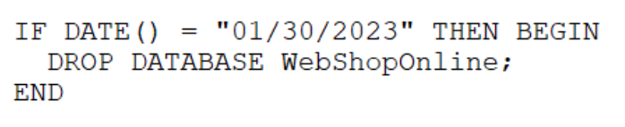

An employee clicked a link in an email from a payment website that asked the employee to update contact information. The employee entered the log-in information but received a “page not found” error message. Which of the following types of social engineering attacks occurred?
An enterprise is trying to limit outbound DNS traffic originating from its internal network. Outbound DNS requests will only be allowed from one device with the IP address 10.50.10.25. Which of the following firewall ACLs will accomplish this goal?
A. Access list outbound permit 0.0.0.0/0 0.0.0.0/0 port 53
Access list outbound deny 10.50.10.25/32 0.0.0.0/0 port 53
B. Access list outbound permit 0.0.0.0/0 10.50.10.25/32 port 53
Access list outbound deny 0.0.0.0/0 0.0.0.0/0 port 53
C. Access list outbound permit 0.0.0.0/0 0.0.0.0/0 port 53
Access list outbound deny 0.0.0.0/0 10.50.10.25/32 port 53
D. Access list outbound permit 10.50.10.25/32 0.0.0.0/0 port 53
Access list outbound deny 0.0.0.0/0 0.0.0.0/0 port 53
中文說明：一家企業試圖限制從其內部網路發出的出站 DNS 流量。出站 DNS 請求將只允許來自 IP 位址為 10.50.10.25 的一台設備。以下哪種防火牆 ACL（存取控制列表）可以實現這個目標？
關鍵字：限制出站 (Limit outbound)、單一設備 (One device)
正確答案：D. Access list outbound permit 10.50.10.25/32 0.0.0.0/0 port 53 Access list outbound deny 0.0.0.0/0 0.0.0.0/0 port 53
重點說明：防火牆 ACL 按順序處理。要實現「只允許來自 10.50.10.25 的 DNS 流量」，必須先明確允許該 IP 的流量，然後再拒絕所有其他流量。
Question #5
A data administrator is configuring authentication for a SaaS application and would like to reduce the number of credentials employees need to maintain. The company prefers to use domain credentials to access new SaaS applications. Which of the following methods would allow this functionality?
正確答案：A. An employee receives a gift card request in an email that has an executive’s name in the display field of the email. (一名員工收到一封電子郵件中的禮品卡請求，該郵件的顯示欄位中包含主管的姓名。)
A company prevented direct access from the database administrators’ workstations to the network segment that contains database servers. Which of the following should a database administrator use to access the database servers?
An organization’s internet-facing website was compromised when an attacker exploited a buffer overflow. Which of the following should the organization deploy to best protect against similar attacks in the future?
An administrator notices that several users are logging in from suspicious IP addresses. After speaking with the users, the administrator determines that the employees were not logging in from those IP addresses and resets the affected users’ passwords. Which of the following should the administrator implement to prevent this type of attack from succeeding in the future?
A. Multifactor authentication
B. Permissions assignment
C. Access management
D. Password complexity
中文說明：管理員發現有幾位使用者從可疑的 IP 位址登入。在與使用者交談後，管理員確定這些員工並非從這些 IP 位址登入，並重設了受影響使用者的密碼。管理員應該實施以下哪項措施，以防止此類攻擊在未來成功？
關鍵字：可疑 IP 登入 (Suspicious IP logging in)、防止未來攻擊 (Prevent future attacks)
An employee receives a text message that appears to have been sent by the payroll department and is asking for credential verification. Which of the following social engineering techniques are being attempted? (Choose two.)
Several employees received a fraudulent text message from someone claiming to be the Chief Executive Officer (CEO). The message stated:
“I’m in an airport right now with no access to email. I need you to buy gift cards for employee recognition awards. Please send the gift cards to the following email address.”
Which of the following are the best responses to this situation? (Choose two.)
A. Cancel current employee recognition gift cards.
B. Add a smishing exercise to the annual company training.
C. Issue a general email warning to the company.
D. Have the CEO change phone numbers.
E. Conduct a forensic investigation on the CEO’s phone.
關鍵字：詐騙簡訊 (Fraudulent text message)、禮品卡請求 (Gift card request)
正確答案：B. Add a smishing exercise to the annual company training. (將簡訊網路釣魚演練納入年度公司培訓。) 和 C. Issue a general email warning to the company. (向公司發出一般電子郵件警告。)
A company is required to use certified hardware when building networks. Which of the following best addresses the risks associated with procuring counterfeit hardware?
A. A thorough analysis of the supply chain
B. A legally enforceable corporate acquisition policy
C. A right to audit clause in vendor contracts and SOWs
D. An in-depth penetration test of all suppliers and vendors
Which of the following provides the details about the terms of a test with a third-party penetration tester?
A. Rules of engagement
B. Supply chain analysis
C. Right to audit clause
D. Due diligence
中文說明：以下哪項提供了與第三方滲透測試人員進行測試的條款細節？
關鍵字：滲透測試 (Penetration tester)、測試條款 (Terms of a test)
正確答案：A. Rules of engagement (交戰規則/測試範圍協議)
重點說明：交戰規則 (Rules of engagement, RoE) 是一份正式文件，詳細說明了滲透測試的範圍、方法、時間、限制和行為準則。
Question #14
A penetration tester begins an engagement by performing port and service scans against the client environment according to the rules of engagement. Which of the following reconnaissance types is the tester performing?
An analyst is evaluating the implementation of Zero Trust principles within the data plane. Which of the following would be most relevant for the analyst to evaluate?
An engineer needs to find a solution that creates an added layer of security by preventing unauthorized access to internal company resources. Which of the following would be the best solution?
A company’s web filter is configured to scan the URL for strings and deny access when matches are found. Which of the following search strings should an analyst employ to prohibit access to non-encrypted websites?
During a security incident, the security operations team identified sustained network traffic from a malicious IP address: 10.1.4.9. A security analyst is creating an inbound firewall rule to block the IP address from accessing the organization’s network. Which of the following fulfills this request?
A. access-list inbound deny ip source 0.0.0.0/0 destination 10.1.4.9/32
B. access-list inbound deny ip source 10.1.4.9/32 destination 0.0.0.0/0
C. access-list inbound permit 0.0.0.0/0 destination 10.1.4.9/32
D. access-list inbound permit 10.1.4.9/32 destination 0.0.0.0/0
中文說明：在一次安全事件中，安全營運團隊識別到來自惡意 IP 位址 10.1.4.9 的持續網路流量。一位安全分析師正在建立一個入站防火牆規則，以阻止該 IP 位址存取組織的網路。以下哪項符合此要求？
關鍵字：惡意 IP (Malicious IP)、阻止存取 (Block access)
正確答案：B. access-list inbound deny ip source 10.1.4.9/32 destination 0.0.0.0/0
重點說明：要阻止特定惡意 IP 的入站流量，防火牆規則必須設定為「拒絕 (deny)」，並指定該惡意 IP 為「來源 (source)」。
Question #22
A company needs to provide administrative access to internal resources while minimizing the traffic allowed through the security boundary. Which of the following methods is most secure?
A security analyst is reviewing alerts in the SIEM related to potential malicious network traffic coming from an employee’s corporate laptop. The security analyst has determined that additional data about the executable running on the machine is necessary to continue the investigation. Which of the following logs should the analyst use as a data source?
A cyber operations team informs a security analyst about a new tactic malicious actors are using to compromise networks. SIEM alerts have not yet been configured. Which of the following best describes what the security analyst should do to identify this behavior?
A security administrator would like to protect data on employees’ laptops. Which of the following encryption techniques should the security administrator use?
A. Partition
B. Asymmetric
C. Full disk
D. Database
中文說明：一位安全管理員希望保護員工筆記型電腦上的資料。這位安全管理員應該使用以下哪種加密技術？
關鍵字：保護資料 (Protect data)、筆記型電腦 (Laptops)
正確答案：C. Full disk (全磁碟加密)
重點說明：全磁碟加密 (Full disk encryption, FDE) 對筆記型電腦的整個硬碟進行加密，確保即使設備遺失或被竊取，資料也無法被存取。
Question #27
Which of the following security control types does an acceptable use policy best represent?
A. Detective
B. Compensating
C. Corrective
D. Preventive
中文說明：以下哪種安全控制類型最能代表可接受使用政策 (AUP)？
關鍵字：可接受使用政策 (Acceptable use policy, AUP)、控制類型 (Control types)
An IT manager informs the entire help desk staff that only the IT manager and the help desk lead will have access to the administrator console of the help desk software. Which of the following security techniques is the IT manager setting up?
A. Hardening
B. Employee monitoring
C. Configuration enforcement
D. Least privilege
中文說明：一位 IT 經理告知所有服務台員工，只有 IT 經理和服務台主管才能存取服務台軟體的管理員控制台。IT 經理正在設定以下哪種安全技術？
Which of the following should a security administrator adhere to when setting up a new set of firewall rules?
A. Disaster recovery plan
B. Incident response procedure
C. Business continuity plan
D. Change management procedure
中文說明：設定一組新的防火牆規則時，安全管理員應遵守以下哪項？
關鍵字：防火牆規則 (Firewall rules)、遵守 (Adhere to)
正確答案：D. Change management procedure (變更管理程序)
重點說明：變更管理程序 (Change management procedure) 是一套正式流程，用於控制和管理對 IT 環境所做的任何變更，以避免引入新的風險或服務中斷。
Question #31
A company is expanding its threat surface program and allowing individuals to security test the company’s internet-facing application. The company will compensate researchers based on the vulnerabilities discovered. Which of the following best describes the program the company is setting up?
Employees in the research and development business unit receive extensive training to ensure they understand how to best protect company data. Which of the following is the type of data these employees are most likely to use in day-to-day work activities?
關鍵字：研發部門 (Research and development)、日常工作 (Day-to-day work)
正確答案：B. Intellectual property (智慧財產權)
重點說明：研發部門的核心職能是創新，因此他們日常接觸和處理的最重要資料是公司的智慧財產權。
Question #35
A company has begun labeling all laptops with asset inventory stickers and associating them with employee IDs. Which of the following security benefits do these actions provide? (Choose two.)
A. If a security incident occurs on the device, the correct employee can be notified.
B. The security team will be able to send user awareness training to the appropriate device.
C. Users can be mapped to their devices when configuring software MFA tokens.
D. User-based firewall policies can be correctly targeted to the appropriate laptops.
E. When conducting penetration testing, the security team will be able to target the desired laptops.
F. Company data can be accounted for when the employee leaves the organization.
中文說明：一家公司已開始為所有筆記型電腦貼上資產清單貼紙，並將其與員工 ID 關聯起來。這些行動提供了以下哪兩種安全效益？（選擇兩項）
關鍵字：資產清單 (Asset inventory)、員工 ID (Employee IDs)
正確答案：A. If a security incident occurs on the device, the correct employee can be notified. (如果設備上發生安全事件，可以通知正確的員工。) 和 F. Company data can be accounted for when the employee leaves the organization. (當員工離開組織時，可以對公司資料進行清點。)
重點說明：資產盤點和歸屬能確保安全事件發生時快速追溯責任人，並在員工離職時妥善清點和回收公司資料。
Question #36
A technician wants to improve the situational and environmental awareness of existing users as they transition from remote to in-office work. Which of the following is the best option?
正確答案：C. Modify the content of recurring training. (修改定期培訓的內容。)
重點說明：對於現有使用者，修改定期培訓內容以涵蓋新安全考量，是最直接有效提高情境和環境意識的方式。
Question #37
A newly appointed board member with cybersecurity knowledge wants the board of directors to receive a quarterly report detailing the number of incidents that impacted the organization. The systems administrator is creating a way to present the data to the board of directors. Which of the following should the systems administrator use?
A systems administrator receives the following alert from a file integrity monitoring tool: The hash of the cmd.exe file has changed.
The systems administrator checks the OS logs and notices that no patches were applied in the last two months. Which of the following most likely occurred?
Which of the following roles, according to the shared responsibility model, is responsible for securing the company’s database in an IaaS model for a cloud environment?
A client asked a security company to provide a document outlining the project, the cost, and the completion time frame. Which of the following documents should the company provide to the client?
A security team is reviewing the findings in a report that was delivered after a third party performed a penetration test. One of the findings indicated that a web application form field is vulnerable to cross-site scripting. Which of the following application security techniques should the security analyst recommend the developer implement to prevent this vulnerability?
A company is developing a business continuity strategy and needs to determine how many staff members would be required to sustain the business in the case of a disruption. Which of the following best describes this step?
A company’s legal department drafted sensitive documents in a SaaS application and wants to ensure the documents cannot be accessed by individuals in high-risk countries. Which of the following is the most effective way to limit this access?
Which of the following is a hardware-specific vulnerability?
A. Firmware version
B. Buffer overflow
C. SQL injection
D. Cross-site scripting
中文說明：以下哪項是硬體特有的漏洞？
關鍵字：硬體特有 (Hardware-specific)、漏洞 (Vulnerability)
正確答案：A. Firmware version (韌體版本)
重點說明：韌體 (Firmware) 是嵌入在硬體設備中的特定軟體，其漏洞直接與硬體相關聯。
Question #49
While troubleshooting a firewall configuration, a technician determines that a “deny any” policy should be added to the bottom of the ACL. The technician updates the policy, but the new policy causes several company servers to become unreachable.
Which of the following actions would prevent this issue?
A. Documenting the new policy in a change request and submitting the request to change management
B. Testing the policy in a non-production environment before enabling the policy in the production network
C. Disabling any intrusion prevention signatures on the “deny any” policy prior to enabling the new policy
D. Including an “allow any” policy above the “deny any” policy
An organization is building a new backup data center with cost-benefit as the primary requirement and RTO and RPO values around two days. Which of the following types of sites is the best for this scenario?
A company requires hard drives to be securely wiped before sending decommissioned systems to recycling. Which of the following best describes this policy?
A systems administrator works for a local hospital and needs to ensure patient data is protected and secure. Which of the following data classifications should be used to secure patient data?
A U.S.-based cloud-hosting provider wants to expand its data centers to new international locations. Which of the following should the hosting provider consider first?
A software development manager wants to ensure the authenticity of the code created by the company. Which of the following options is the most appropriate?
A. Testing input validation on the user input fields
B. Performing code signing on company-developed software
C. Performing static code analysis on the software
D. Ensuring secure cookies are used
中文說明：軟體開發經理希望確保公司所創建程式碼的真實性。以下哪個選項是最合適的？
關鍵字：程式碼真實性 (Authenticity of the code)、軟體開發 (Software development)
正確答案：B. Performing code signing on company-developed software (對公司開發的軟體進行程式碼簽章)
During an investigation, an incident response team attempts to understand the source of an incident. Which of the following incident response activities describes this process?
A. Analysis
B. Lessons learned
C. Detection
D. Containment
中文說明：在調查期間，事件回應團隊試圖了解事件的來源。以下哪項事件回應活動描述了這個過程？
關鍵字：調查 (Investigation)、了解來源 (Understand the source)
A security practitioner completes a vulnerability assessment on a company’s network and finds several vulnerabilities, which the operations team remediates. Which of the following should be done next?
An organization recently updated its security policy to include the following statement:
Regular expressions are included in source code to remove special characters such as $, |, ;, &, `, and ? from variables set by forms in a web application.
Which of the following best explains the security technique the organization adopted by making this addition to the policy?
A security analyst and the management team are reviewing the organizational performance of a recent phishing campaign. The user click-through rate exceeded the acceptable risk threshold, and the management team wants to reduce the impact when a user clicks on a link in a phishing message. Which of the following should the analyst do?
A. Place posters around the office to raise awareness of common phishing activities.
B. Implement email security filters to prevent phishing emails from being delivered.
C. Update the EDR policies to block automatic execution of downloaded programs.
D. Create additional training for users to recognize the signs of phishing attempts.
When a host-based firewall on a legacy Linux system allows connections from only specific internal IP addresses, which of the following has been implemented?
A. Compensating control
B. Network segmentation
C. Transfer of risk
D. SNMP traps
中文說明：當舊版 Linux 系統上的主機型防火牆只允許來自特定內部 IP 位址的連線時，以下哪項已實施？
A company is planning to set up a SIEM system and assign an analyst to review the logs on a weekly basis. Which of the following types of controls is the company setting up?
A security operations center determines that the malicious activity detected on a server is normal. Which of the following activities describes the act of ignoring detected activity in the future?
After a recent vulnerability scan, a security engineer needs to harden the routers within the corporate network. Which of the following is the most appropriate to disable?
A security administrator needs a method to secure data in an environment that includes some form of checks to track any changes. Which of the following should the administrator set up to achieve this goal?
關鍵字：登入失敗 (Login failed)、短時間大量 (Frequent in short time)
正確答案：A. Brute-force attack (暴力破解攻擊)
重點說明：日誌中顯示在極短的時間內（例如 22 秒），針對單一伺服器出現了大量連續的「稽核失敗 (Audit Failure)」登入嘗試（Event ID 4625）。這種快速且重複的失敗登入嘗試模式是典型的暴力破解攻擊的跡象，攻擊者正嘗試猜測密碼以獲得未經授權的存取。
Question #82
A security engineer is implementing FDE for all laptops in an organization. Which of the following are the most important for the engineer to consider as part of the planning process? (Choose two.)
A security analyst scans a company's public network and discovers a host is running a remote desktop that can be used to access the production network. Which of the following changes should the security analyst recommend?
A. Changing the remote desktop port to a non-standard number
B. Setting up a VPN and placing the jump server inside the firewall
C. Using a proxy for web connections from the remote desktop server
D. Connecting the remote server to the domain and increasing the password length
An enterprise has been experiencing attacks focused on exploiting vulnerabilities in older browser versions with well-known exploits. Which of the following security solutions should be configured to best provide the ability to monitor and block these known signature-based attacks?
Security controls in a data center are being reviewed to ensure data is properly protected and that human life considerations are included. Which of the following best describes how the controls should be set up?
重點說明：證據保管鏈 (Chain of custody) 是一個詳細的記錄過程，用於追蹤數位證據的整個生命週期，確保其在法律程序中的完整性和有效性。
Question #88
An accounting clerk sent money to an attacker's bank account after receiving fraudulent instructions to use a new account. Which of the following would most likely prevent this activity in the future?
正確答案：D. Updating processes for sending wire transfers (更新電匯流程)
重點說明：更新電匯流程，例如要求多重驗證或獨立驗證，是防止此類財務詐騙最直接有效的預防措施。
Question #89
A systems administrator is creating a script that would save time and prevent human error when performing account creation for a large number of end users. Which of the following would be a good use case for this task?
關鍵字：帳戶創建 (Account creation)、防止人為錯誤 (Prevent human error)
正確答案：B. Orchestration (協同編排/自動化流程)
重點說明：協同編排 (Orchestration) 是指將多個自動化任務協調起來，形成統一自動化工作流程，以高效完成複雜的 IT 操作，例如大量帳戶創建。
Question #90
A company's marketing department collects, modifies, and stores sensitive customer data. The infrastructure team is responsible for securing the data while in transit and at rest. Which of the following data roles describes the customer?
A security analyst receives alerts about an internal system sending a large amount of unusual DNS queries to systems on the internet over short periods of time during non-business hours. Which of the following is most likely occurring?
A. A worm is propagating across the network.
B. Data is being exfiltrated.
C. A logic bomb is deleting data.
D. Ransomware is encrypting files.
中文說明：一位安全分析師收到警報，指出某個內部系統在非工作時間的短時間內向網際網路上系統發送大量異常的 DNS 查詢。以下哪項最可能發生？
關鍵字：異常 DNS 查詢 (Unusual DNS queries)、非工作時間 (Non-business hours)
正確答案：B. Data is being exfiltrated. (資料正在外洩。)
重點說明：大量異常的 DNS 查詢，尤其在非工作時間，通常是透過 DNS 隧道進行資料外洩的強烈指標。
Question #93
A technician is opening ports on a firewall for a new system being deployed and supported by a SaaS provider. Which of the following is a risk in the new system?
Which of the following is used to validate a certificate when it is presented to a user?
A. OCSP
B. CSR
C. CA
D. CRC
中文說明：以下哪項用於向使用者呈現憑證時驗證其有效性？
關鍵字：驗證憑證 (Validate a certificate)、有效性 (Validity)
正確答案：A. OCSP (線上憑證狀態協定)
重點說明：線上憑證狀態協定 (OCSP) 是一種用於即時查詢數位憑證有效狀態的協定。
Question #97
One of a company's vendors sent an analyst a security bulletin that recommends a BIOS update. Which of the following vulnerability types is being addressed by the patch?
Which of the following actions could a security engineer take to ensure workstations and servers are properly monitored for unauthorized changes and software?
A. Configure all systems to log scheduled tasks.
B. Collect and monitor all traffic exiting the network.
C. Block traffic based on known malicious signatures.
D. Install endpoint management software on all systems
An organization disabled unneeded services and placed a firewall in front of a business-critical legacy system. Which of the following best describes the actions taken by the organization?
A security consultant needs secure, remote access to a client environment. Which of the following should the security consultant most likely use to gain access?
After a security awareness training session, a user called the IT help desk and reported a suspicious call. The suspicious caller stated that the Chief Financial Officer wanted credit card information in order to close an invoice. Which of the following topics did the user recognize from the training?
A. Insider threat
B. Email phishing
C. Social engineering
D. Executive whaling
中文說明：在一次安全意識培訓課程後，一位使用者致電 IT 服務台報告一個可疑電話。可疑來電者表示首席財務長（CFO）想要信用卡資訊來結清發票。使用者從培訓中辨識出了以下哪個主題？
A security administrator is deploying a DLP solution to prevent the exfiltration of sensitive customer data. Which of the following should the administrator do first?
A. Block access to cloud storage websites.
B. Create a rule to block outgoing email attachments.
C. Apply classifications to the data.
D. Remove all user permissions from shares on the file server.
中文說明：一位安全管理員正在部署 DLP 解決方案，以防止敏感客戶資料外洩。管理員首先應該怎麼做？
關鍵字：DLP 解決方案 (DLP solution)、首先 (First)
正確答案：C. Apply classifications to the data. (對資料進行分類。)
An administrator assists the legal and compliance team with ensuring information about customer transactions is archived for the proper time period. Which of the following data policies is the administrator carrying out?
A company is working with a vendor to perform a penetration test. Which of the following includes an estimate about the number of hours required to complete the engagement?
A Chief Information Security Officer (CISO) wants to explicitly raise awareness about the increase of ransomware-as-a-service in a report to the management team. Which of the following best describes the threat actor in the CISO’s report?
A company is adding a clause to its AUP that states employees are not allowed to modify the operating system on mobile devices. Which of the following vulnerabilities is the organization addressing?
正確答案：C. Badge access (徽章存取/門禁卡) 和 D. Access control vestibule (門禁前廳/人員閘道)
重點說明：門禁卡提供存取驗證，門禁前廳則有效防止尾隨，兩者結合能確保只有單獨驗證的授權人員進入。
Question #114
An organization would like to store customer data on a separate part of the network that is not accessible to users on the main corporate network. Which of the following should the administrator use to accomplish this goal?
Malware spread across a company's network after an employee visited a compromised industry blog. Which of the following best describes this type of attack?
An organization is struggling with scaling issues on its VPN concentrator and internet circuit due to remote work. The organization is looking for a software solution that will allow it to reduce traffic on the VPN and internet circuit, while still providing encrypted tunnel access to the data center and monitoring of remote employee internet traffic. Which of the following will help achieve these objectives?
A. Deploying a SASE solution to remote employees
B. Building a load-balanced VPN solution with redundant internet
C. Purchasing a low-cost SD-WAN solution for VPN traffic
D. Using a cloud provider to create additional VPN concentrators
Which of the following are cases in which an engineer should recommend the decommissioning of a network device? (Choose two.)
A. The device has been moved from a production environment to a test environment.
B. The device is configured to use cleartext passwords.
C. The device is moved to an isolated segment on the enterprise network.
D. The device is moved to a different location in the enterprise.
E. The device's encryption level cannot meet organizational standards.
F. The device is unable to receive authorized updates.
中文說明：以下哪些情況工程師應該推薦淘汰網路設備？（選擇兩項）
關鍵字：淘汰 (Decommissioning)、網路設備 (Network device)
正確答案：E. The device's encryption level cannot meet organizational standards. (設備的加密等級無法滿足組織標準。) 和 F. The device is unable to receive authorized updates. (設備無法接收授權更新。)
重點說明：設備無法滿足加密標準或無法接收安全更新，表示存在嚴重安全風險，應予以淘汰。
Question #121
A company is required to perform a risk assessment on an annual basis. Which of the following types of risk assessments does this requirement describe?
A. Continuous
B. Ad hoc
C. Recurring
D. One time
中文說明：一家公司被要求每年進行一次風險評估。此要求描述了以下哪種類型的風險評估？
關鍵字：風險評估 (Risk assessment)、每年 (Annual basis)
正確答案：C. Recurring (週期性/重複性)
重點說明：「每年」進行風險評估意味著這是一種有固定間隔的週期性或重複性活動。
Question #122
After a recent ransomware attack on a company's system, an administrator reviewed the log files. Which of the following control types did the administrator use?
Which of the following best ensures minimal downtime and data loss for organizations with critical computing equipment located in earthquake-prone areas?
A newly identified network access vulnerability has been found in the OS of legacy IoT devices. Which of the following would best mitigate this vulnerability quickly?
After an audit, an administrator discovers all users have access to confidential data on a file server. Which of the following should the administrator use to restrict access to the data quickly?
A client demands at least 99.99% uptime from a service provider's hosted security services. Which of the following documents includes the information the service provider should return to the client?
重點說明：服務級別協議 (SLA, Service Level Agreement) 是一份合約，詳細定義了服務供應商向客戶提供的服務水平承諾，包括正常運行時間 (uptime)、性能、響應時間、支援等關鍵指標。
Question #128:
A company is discarding a classified storage array and hires an outside vendor to complete the disposal. Which of the following should the company request from the vendor?
A company is planning a disaster recovery site and needs to ensure that a single natural disaster would not result in the complete loss of regulated backup data. Which of the following should the company consider?
A security analyst locates a potentially malicious video file on a server and needs to identify both the creation date and the file's creator. Which of the following actions would most likely give the security analyst the information required?
A small business uses kiosks on the sales floor to display product information for customers. A security team discovers the kiosks use end-of-life operating systems. Which of the following is the security team most likely to document as a security implication of the current architecture?
Which of the following would help ensure a security analyst is able to accurately measure the overall risk to an organization when a new vulnerability is disclosed?
A. A full inventory of all hardware and software
B. Documentation of system classifications
C. A list of system owners and their departments
D. Third-party risk assessment documentation
中文說明：以下哪項能幫助安全分析師在新的漏洞被揭露時，準確衡量組織的整體風險？
關鍵字：準確衡量、整體風險
正確答案：A. A full inventory of all hardware and software (所有硬體和軟體的完整清單)
Which of the following best practices gives administrators a set period to perform changes to an operational system to ensure availability and minimize business impacts?
A company must ensure sensitive data at rest is rendered unreadable. Which of the following will the company most likely use?
A. Hashing
B. Tokenization
C. Encryption
D. Segmentation
中文說明：一家公司必須確保靜止狀態的敏感資料無法讀取。該公司最可能使用以下哪項？
關鍵字：靜止資料、無法讀取
正確答案：C. Encryption (加密)
重點說明：加密 (Encryption) 是將資料轉換為一種不可讀格式的過程，除非擁有正確的金鑰才能解密。這是確保靜止狀態資料 (data at rest) 無法被未經授權方讀取的最主要且最有效的技術手段。
Question #136:
A legacy device is being decommissioned and is no longer receiving updates or patches. Which of the following describes this scenario?
A. End of business
B. End of testing
C. End of support
D. End of life
中文說明：一個舊版設備正在退役，並且不再接收更新或修補程式。以下哪項描述了這種情況？
關鍵字：舊版設備、不再更新
正確答案：D. End of life (生命週期結束)
重點說明：生命週期結束 (End of Life, EOL) 是指製造商停止提供產品的技術支援、更新和修補程式的日期。這正是題目中描述的設備「不再接收更新或修補程式」的情況，通常表示該設備已到壽命盡頭。
Question #137:
A bank insists all of its vendors must prevent data loss on stolen laptops. Which of the following strategies is the bank requiring?
A. Encryption at rest
B. Masking
C. Data classification
D. Permission restrictions
中文說明：一家銀行堅持其所有供應商都必須防止被盜筆記型電腦上的資料丟失。該銀行要求以下哪種策略？
關鍵字：防止資料丟失、被盜筆電
正確答案：A. Encryption at rest (靜態資料加密)
重點說明：靜態資料加密 (Encryption at rest) 是指對儲存在儲存設備（如筆記型電腦的硬碟）上的資料進行加密。如果筆記型電腦被盜，即使設備落入未經授權者手中，加密也能使其無法讀取資料，從而有效防止資料洩露或丟失。
Question #138:
A company's end users are reporting that they are unable to reach external websites. After reviewing the performance data for the DNS servers, the analyst discovers that the CPU, disk, and memory usage are minimal, but the network interface is flooded with inbound traffic. Network logs show only a small number of DNS queries sent to this server. Which of the following best describes what the security analyst is seeing?
A. Concurrent session usage
B. Secure DNS cryptographic downgrade
C. On-path resource consumption
D. Reflected denial of service
中文說明：一家公司的終端使用者報告他們無法訪問外部網站。分析師審查了 DNS 伺服器的性能數據後發現，CPU、磁碟和記憶體使用率都很低，但網路介面卻被入站流量淹沒。網路日誌顯示只有少量 DNS 查詢發送到該伺服器。以下哪項最能描述安全分析師所看到的情況？
關鍵字：DNS 伺服器、流量淹沒
正確答案：D. Reflected denial of service (反射式阻斷服務攻擊)
重點說明：反射式阻斷服務攻擊 (Reflected Denial of Service) 是一種 DDoS 攻擊，攻擊者利用無辜的第三方伺服器（在這種情況下是 DNS 伺服器）來放大攻擊流量，並將其反射到目標。日誌中顯示的 DNS 伺服器網路介面被大量入站流量淹沒，但自身發出的 DNS 查詢卻很少，這表明它正在被用作反射器。
Question #139:
A systems administrator wants to prevent users from being able to access data based on their responsibilities. The administrator also wants to apply the required access structure via a simplified format. Which of the following should the administrator apply to the site recovery resource group?
During the onboarding process, an employee needs to create a password for an intranet account. The password must include ten characters, numbers, and letters, and two special characters. Once the password is created, the company will grant the employee access to other company-owned websites based on the intranet profile. Which of the following access management concepts is the company most likely using to safeguard intranet accounts and grant access to multiple sites based on a user's intranet account? (Choose two.)
Which of the following describes a security alerting and monitoring tool that collects system, application, and network logs from multiple sources in a centralized system?
After a company was compromised, customers initiated a lawsuit. The company's attorneys have requested that the security team initiate a legal hold in response to the lawsuit. Which of the following describes the action the security team will most likely be required to take?
A. Retain the emails between the security team and affected customers for 30 days.
B. Retain any communications related to the security breach until further notice.
C. Retain any communications between security members during the breach response.
D. Retain all emails from the company to affected customers for an indefinite period of time.
An employee receives a text message from an unknown number claiming to be the company’s Chief Executive Officer and asking the employee to purchase several gift cards. Which of the following types of attacks does this describe?
Which of the following risk management strategies should an enterprise adopt first if a legacy application is critical to business operations and there are preventative controls that are not yet implemented?
Visitors to a secured facility are required to check in with a photo ID and enter the facility through an access control vestibule. Which of the following best describes this form of security control?
重點說明：實體安全控制 (Physical security control) 涉及對設施、資產和人員的物理保護。使用照片 ID 檢查和門禁前廳 (access control vestibule) 都是具體的物理障礙和驗證機制，用於控制對實際場所的存取。
Question #150
The local administrator account for a company's VPN appliance was unexpectedly used to log in to the remote management interface. Which of the following would have most likely prevented this from happening?
An engineer moved to another team and is unable to access the new team's shared folders while still being able to access the shared folders from the former team. After opening a ticket, the engineer discovers that the account was never moved to the new group. Which of the following access controls is most likely causing the lack of access?
Which of the following factors are the most important to address when formulating a training curriculum plan for a security awareness program? (Choose two.)
A. Channels by which the organization communicates with customers
B. The reporting mechanisms for ethics violations
C. Threat vectors based on the industry in which the organization operates
D. Secure software development training for all personnel
E. Cadence and duration of training events
F. Retraining requirements for individuals who fail phishing simulations
中文說明：在制定安全意識培訓課程計畫時，以下哪兩項是最重要的考量因素？（選擇兩項）
關鍵字：培訓計畫、重要考量
正確答案：C. Threat vectors based on the industry in which the organization operates (基於組織所處行業的威脅向量) 和 E. Cadence and duration of training events (培訓活動的頻率和持續時間)
A network administrator is working on a project to deploy a load balancer in the company's cloud environment. Which of the following fundamental security requirements does this project fulfill?
A systems administrator is changing the password policy within an enterprise environment and wants this update implemented on all systems as quickly as possible. Which of the following operating system security measures will the administrator most likely use?
重點說明：群組原則物件 (GPO) 是 Windows 網域環境中用於集中管理設定的工具。透過推送 GPO 更新，系統管理員可以快速且一致地將新的密碼策略應用到網域內所有 Windows 系統上。
Question #156
Which of the following would be most useful in determining whether the long-term cost to transfer a risk is less than the impact of the risk?
A. ARO
B. RTO
C. RPO
D. ALE
E. SLE
中文說明：以下哪項在確定轉移風險的長期成本是否小於風險影響方面最有用？
關鍵字：風險轉移、成本效益
正確答案：D. ALE (年度損失預期值)
重點說明：年度損失預期值 (ALE) 量化風險的財務影響。透過計算和比較風險發生時的 ALE 與轉移風險的成本，可判斷哪種選項在財務上更具效益。
Question #157
In order to strengthen a password and prevent a hacker from cracking it, a random string of 36 characters was added to the password. Which of the following best describes this technique?
A company is experiencing a web services outage on the public network. The services are up and available but inaccessible. The network logs show a sudden increase in network traffic that is causing the outage. Which of the following attacks is the organization experiencing?
An organization experiences a cybersecurity incident involving a command-and-control server. Which of the following logs should be analyzed to identify the impacted host? (Choose two.)
During a penetration test, a vendor attempts to enter an unauthorized area using an access badge. Which of the following types of tests does this represent?
A systems administrator uses a key to encrypt a message being sent to a peer in a different branch office. The peer then uses the same key to decrypt the message. Which of the following describes this example?
A visitor plugs a laptop into a network jack in the lobby and is able to connect to the company's network. Which of the following should be configured on the existing network infrastructure to best prevent this activity?
重點說明：埠安全 (Port security) 是一種交換機功能，允許網路管理員限制連接到特定交換機埠的設備數量或 MAC 位址。如果配置了埠安全，一旦未經授權的設備連接到網路插孔，交換機可以阻止其流量或關閉埠，從而防止未經授權的網路存取。
Question #165
A security administrator is reissuing a former employee's laptop. Which of the following is the best combination of data handling activities for the administrator to perform? (Choose two.)
A systems administrator would like to deploy a change to a production system. Which of the following must the administrator submit to demonstrate that the system can be restored to a working state in the event of a performance issue?
A company is redesigning its infrastructure and wants to reduce the number of physical servers in use. Which of the following architectures is best suited for this goal?
Users at a company are reporting they are unable to access the URL for a new retail website because it is flagged as gambling and is being blocked. Which of the following changes would allow users to access the site?
A. Creating a firewall rule to allow HTTPS traffic
B. Configuring the IPS to allow shopping
C. Tuning the DLP rule that detects credit card data
D. Updating the categorization in the content filter
The CIRT is reviewing an incident that involved a human resources recruiter exfiltrating sensitive company data. The CIRT found that the recruiter was able to use HTTP over port 53 to upload documents to a web server. Which of the following security infrastructure devices could have identified and blocked this activity?
An enterprise is working with a third party and needs to allow access between the internal networks of both parties for a secure file migration. The solution needs to ensure encryption is applied to all traffic that is traversing the networks. Which of the following solutions should most likely be implemented?
重點說明：IPSec (網際網路協定安全) 是一種在 IP 層提供加密和驗證的協定套件，常用於建立站對站 (site-to-site) VPN。這非常適合在兩家公司內部網路之間建立加密隧道以進行安全的檔案遷移，確保所有穿越網路的流量都被加密。
Question #174
An administrator has identified and fingerprinted specific files that will generate an alert if an attempt is made to email these files outside of the organization. Which of the following best describes the tool the administrator is using?
A software developer released a new application and is distributing application files via the developer's website. Which of the following should the developer post on the website to allow users to verify the integrity of the downloaded files?
An organization wants to limit potential impact to its log-in database in the event of a breach. Which of the following options is the security team most likely to recommend?
An administrator finds that all user workstations and servers are displaying a message that is associated with files containing an extension of .ryk. Which of the following types of infections is present on the systems?
A systems administrator is advised that an external web server is not functioning properly. The administrator reviews the following firewall logs containing traffic going to the web server:
Which of the following attacks is likely occurring?
A. DDoS
B. Directory traversal
C. Brute-force
D. HTTPS downgrade
中文說明：系統管理員被告知外部網頁伺服器運作不正常。管理員審查了包含流向網頁伺服器流量的以下防火牆日誌：[圖片內容顯示：多條在同一時間（01:45:09.102）從不同來源 IP 地址（例如 98.123.45.100, 95.123.45.101 等）向同一目的 IP (100.50.20.7) 和埠 443 發送 SYN 旗標的日誌記錄。]
關鍵字：多源 SYN (Multiple source SYN)、服務異常 (Service abnormality)
正確答案：A. DDoS (分散式阻斷服務攻擊)
重點說明：日誌顯示在同一極短時間內，有多個不同來源 IP 地址向同一個目的 IP (網頁伺服器)的埠 443（HTTPS）發送大量的 SYN 封包 (SYN flag)。這種從多個來源發動的、旨在耗盡伺服器資源或網路頻寬的協調性流量洪泛，正是分散式阻斷服務攻擊 (DDoS) 的典型特徵，導致服務「運作不正常」。
Question #179
An organization would like to calculate the time needed to resolve a hardware issue with a server. Which of the following risk management processes describes this example?
A. Recovery point objective
B. Mean time between failures
C. Recovery time objective
D. Mean time to repair
中文說明：一個組織希望計算解決伺服器硬體問題所需的時間。以下哪項風險管理流程描述了這個例子？
關鍵字：解決時間、硬體問題
正確答案：D. Mean time to repair (平均修復時間)
重點說明：平均修復時間 (MTTR, Mean Time To Repair) 是一個用於衡量修復一個故障或問題（如伺服器硬體問題）所需平均時間的指標。它直接量化了從問題發生到完全解決並恢復服務的時間。
Question #180
A security engineer is installing an IPS to block signature-based attacks in the environment. Which of the following modes will best accomplish this task?
An IT manager is increasing the security capabilities of an organization after a data classification initiative determined that sensitive data could be exfiltrated from the environment. Which of the following solutions would mitigate the risk?
A. XDR
B. SPF
C. DLP
D. DMARC
中文說明：在資料分類措施確定敏感資料可能從環境中外洩後，一位 IT 經理正在增加組織的安全能力。以下哪種解決方案將減輕此風險？
Which of the following is used to protect a computer from viruses, malware, and Trojans being installed and moving laterally across the network?
A. IDS
B. ACL
C. EDR
D. NAC
中文說明：以下哪項用於保護電腦免受病毒、惡意軟體和特洛伊木馬的安裝以及在網路中橫向移動？
關鍵字：保護電腦、橫向移動
正確答案：C. EDR (端點偵測及回應)
重點說明：EDR (Endpoint Detection and Response，端點偵測及回應) 是一種安全解決方案，它持續監控端點（如電腦）活動，偵測可疑行為、惡意軟體（病毒、特洛伊木馬）的安裝，並能識別和阻止攻擊者在網路中進行橫向移動，提供端點層面的全面保護和回應能力。
Question #183
Client files can only be accessed by employees who need to know the information and have specified roles in the company. Which of the following best describes this security concept?
A new employee logs in to the email system for the first time and notices a message from human resources about onboarding. The employee hovers over a few of the links within the email and discovers that the links do not correspond to links associated with the company. Which of the following attack vectors is most likely being used?
Which of the following describes the understanding between a company and a client about what will be provided and the accepted time needed to provide the company with the resources?
A. SLA
B. MOU
C. MOA
D. BPA
中文說明：以下哪項描述了公司與客戶之間關於將提供什麼以及公司獲得資源所需的可接受時間的理解？
關鍵字：服務承諾、時間約定
正確答案：A. SLA (服務級別協議)
重點說明：服務級別協議 (SLA, Service Level Agreement) 是一份正式文件，它明確定義了服務提供者與客戶之間關於服務交付的承諾，包括服務範圍、品質、可用性以及響應時間等。
Question #187
A company that is located in an area prone to hurricanes is developing a disaster recovery plan and looking at site considerations that allow the company to immediately continue operations. Which of the following is the best type of site for this company?
Which of the following best describes the practice of researching laws and regulations related to information security operations within a specific industry?
A security analyst is investigating a workstation that is suspected of outbound communication to a command-and-control server. During the investigation, the analyst discovered that logs on the endpoint were deleted. Which of the following logs would the analyst most likely look at next?
An IT manager is putting together a documented plan describing how the organization will keep operating in the event of a global incident. Which of the following plans is the IT manager creating?
A. Business continuity
B. Physical security
C. Change management
D. Disaster recovery
中文說明：一位 IT 經理正在制定一份文件化的計畫，描述在發生全球事件時組織將如何保持運作。這位 IT 經理正在建立以下哪種計畫？
關鍵字：保持運作、全球事件
正確答案：A. Business continuity (業務連續性計畫)
重點說明：業務連續性計畫 (BCP, Business Continuity Plan) 旨在確保組織在面對任何重大中斷（包括題目中的「全球事件」）時，能夠持續運作其關鍵業務功能。它涵蓋了業務流程、人員、地點、技術等所有方面，是確保組織韌性的總體計畫。
Question #193
A business needs a recovery site but does not require immediate failover. The business also wants to reduce the workload required to recover from an outage. Which of the following recovery sites is the best option?
A security team is setting up a new environment for hosting the organization's on-premises software application as a cloud-based service. Which of the following should the team ensure is in place in order for the organization to follow security best practices?
正確答案：A. Virtualization and isolation of resources (資源的虛擬化和隔離)
重點說明：當將內部部署應用程式遷移到雲端作為服務時，資源的虛擬化和隔離 (Virtualization and isolation of resources) 是雲端環境中遵循安全最佳實踐的基礎。這確保了不同客戶或不同應用程式的資源彼此獨立，即使一個資源受到威脅，也不會影響其他資源，從而增強了多租戶雲端環境的安全性。
Question #195
A manager receives an email that contains a link to receive a refund. After hovering over the link, the manager notices that the domain's URL points to a suspicious link. Which of the following security practices helped the manager to identify the attack?
重點說明：經理能夠透過「將滑鼠懸停在連結上」來檢查實際的 URL 並發現其可疑，這是一種需要使用者意識和知識才能執行的動作。這種辨識可疑連結的能力通常是透過有效的終端使用者安全意識培訓 (End user training) 所習得的，使其能識別網路釣魚或惡意連結的跡象。
Question #196
A company wants to verify that the software the company is deploying came from the vendor the company purchased the software from. Which of the following is the best way for the company to confirm this information?
A systems administrator notices that one of the systems critical for processing customer transactions is running an end-of-life operating system. Which of the following techniques would increase enterprise security?
The Chief Information Security Officer (CISO) at a large company would like to gain an understanding of how the company's security policies compare to the requirements imposed by external regulators. Which of the following should the CISO use?
A systems administrator notices that the research and development department is not using the company VPN when accessing various company-related services and systems. Which of the following scenarios describes this activity?
重點說明：影子 IT (Shadow IT) 是指員工在未經 IT 部門正式批准或監督的情況下，使用未經授權的系統、軟體、服務或設備來執行與工作相關的活動。研發部門在存取公司資源時未經授權地規避使用公司 VPN，正是典型的影子 IT 行為。
Question #200
The marketing department set up its own project management software without telling the appropriate departments. Which of the following describes this scenario?
A. Shadow IT
B. Insider threat
C. Data exfiltration
D. Service disruption
中文說明：行銷部門在未告知相關部門的情況下，自行架設了專案管理軟體。以下哪項描述了這種情況？
關鍵字：自行架設、未告知
正確答案：A. Shadow IT (影子IT)
重點說明：影子 IT (Shadow IT) 是指員工或部門在未經 IT 部門正式批准或監督的情況下，使用或部署IT系統、軟體或服務來執行工作相關活動。行銷部門「自行架設」專案管理軟體且「未告知相關部門」，完全符合影子 IT 的定義。
Question #201
Which of the following would best explain why a security analyst is running daily vulnerability scans on all corporate endpoints?
A. To track the status of patching installations
B. To find shadow IT cloud deployments
C. To continuously monitor hardware inventory
D. To hunt for active attackers in the network
中文說明：以下哪項最能解釋為什麼安全分析師每天對所有公司端點執行漏洞掃描？
關鍵字：每日掃描、漏洞修補
正確答案：A. To track the status of patching installations (追蹤修補程式安裝狀態)
The Chief Information Security Officer (CISO) has determined the company is non-compliant with local data privacy regulations. The CISO needs to justify the budget request for more resources. Which of the following should the CISO present to the board as the direct consequence of non-compliance?
A security analyst is investigating an application server and discovers that software on the server is behaving abnormally. The software normally runs batch jobs locally and does not generate traffic, but the process is now generating outbound traffic over random high ports. Which of the following vulnerabilities has likely been exploited in this software?
An important patch for a critical application has just been released, and a systems administrator is identifying all of the systems requiring the patch. Which of the following must be maintained in order to ensure that all systems requiring the patch are updated?
A healthcare organization wants to provide a web application that allows individuals to digitally report health emergencies. Which of the following is the most important consideration during development?
To improve the security at a data center, a security administrator implements a CCTV system and posts several signs about the possibility of being filmed. Which of the following best describe these types of controls? (Choose two.)
An attacker posing as the Chief Executive Officer calls an employee and instructs the employee to buy gift cards. Which of the following techniques is the attacker using?
After conducting a vulnerability scan, a systems administrator notices that one of the identified vulnerabilities is not present on the systems that were scanned. Which of the following describes this example?
A recent penetration test identified that an attacker could flood the MAC address table of network switches. Which of the following would best mitigate this type of attack?
A. Load balancer
B. Port security
C. IPS
D. NGFW
中文說明：最近一次滲透測試發現，攻擊者可以淹沒網路交換機的 MAC 位址表。以下哪項能最好地緩解這種類型的攻擊？
關鍵字：MAC 位址表、洪泛
正確答案：B. Port security (埠安全)
重點說明：埠安全 (Port security) 是一種交換機功能，允許管理員限制每個交換機埠上學習到的 MAC 位址數量。這能有效地防止 MAC 地址表洪泛攻擊。
Question #220
A user would like to install software and features that are not available with a smartphone's default software. Which of the following would allow the user to install unauthorized software and enable new features?
Employees located off-site must have access to company resources in order to complete their assigned tasks. These employees utilize a solution that allows remote access without interception concerns. Which of the following best describes this solution?
A company allows customers to upload PDF documents to its public e-commerce website. Which of the following would a security analyst most likely recommend?
A. Utilizing attack signatures in an IDS
B. Enabling malware detection through a UTM
C. Limiting the affected servers with a load balancer
D. Blocking command injections via a WAF
中文說明：一家公司允許客戶將 PDF 文件上傳到其公共電子商務網站。安全分析師最可能推薦以下哪項？
關鍵字：上傳 PDF、電子商務
正確答案：B. Enabling malware detection through a UTM (透過 UTM 啟用惡意軟體偵測)
重點說明：允許客戶上傳文件到公共網站存在惡意文件上傳的風險。整合式威脅管理 (UTM) 設備通常包含多種安全功能，其中就包括惡意軟體偵測 (malware detection)。啟用此功能可以掃描上傳的 PDF 文件，以識別並阻止惡意軟體，從而保護網站和後端系統免受感染。
Question #225
A security analyst developed a script to automate a trivial and repeatable task. Which of the following best describes the benefits of ensuring other team members understand how the script works?
正確答案：D. To prevent a single point of failure (防止單點故障)
重點說明：如果只有一名團隊成員理解和能操作某個關鍵的自動化腳本，那麼當該成員不在時（休假、離職等），這個腳本就會成為一個單點故障 (single point of failure)。確保其他團隊成員也理解其運作原理，可以提高操作的韌性，避免依賴單一人員。
Question #226
A company is decommissioning its physical servers and replacing them with an architecture that will reduce the number of individual operating systems. Which of the following strategies should the company use to achieve this security requirement?
A Chief Information Security Officer would like to conduct frequent, detailed reviews of systems and procedures to track compliance objectives. Which of the following will be the best method to achieve this objective?
After creating a contract for IT contractors, the human resources department changed several clauses. The contract has gone through three revisions. Which of the following processes should the human resources department follow to track revisions?
A. Version validation
B. Version changes
C. Version updates
D. Version control
中文說明：人力資源部門在為 IT 承包商建立合約後，更改了幾個條款。該合約已經經過三次修訂。人力資源部門應該遵循以下哪種流程來追蹤修訂？
The executive management team is mandating the company develop a disaster recovery plan. The cost must be kept to a minimum, and the money to fund additional internet connections is not available. Which of the following would be the best option?
An administrator at a small business notices an increase in support calls from employees who receive a blocked page message after trying to navigate to a spoofed website. Which of the following should the administrator do?
A company wants to ensure that the software it develops will not be tampered with after the final version is completed. Which of the following should the company most likely use?
An organization completed a project to deploy SSO across all business applications last year. Recently, the finance department selected a new cloud-based accounting software vendor. Which of the following should most likely be configured during the new software deployment?
A user, who is waiting for a flight at an airport, logs in to the airline website using the public Wi-Fi, ignores a security warning and purchases an upgraded seat. When the flight lands, the user finds unauthorized credit card charges. Which of the following attacks most likely occurred?
A network engineer deployed a redundant switch stack to increase system availability. However, the budget can only cover the cost of one ISP connection. Which of the following best describes the potential risk factor?
正確答案：D. There is a single point of failure. (存在單點故障。)
重點說明：雖然交換機堆疊提供了內部冗餘，但如果只有一個 ISP 連接，這個 ISP 連接本身就成為了一個單點故障 (single point of failure)。一旦該 ISP 的服務中斷，無論交換機堆疊多麼冗餘，整個網路仍然會失去對外部的連接，導致服務不可用。
Question #240
A network team segmented a critical,end-of-life server to a VLAN that can only be reached by specific devices but cannot be reached by the perimeter network. Which of the following best describe the controls the team implemented? (Choose two.)
A security analyst is investigating a suspected malware infection and discovers that the malware is attempting to communicate with a known malicious IP address. Which of the following should the analyst use to prevent internal systems from communicating with the malicious IP address?
A. Firewall
B. SIEM
C. DLP
D. NAC
中文說明：一位安全分析師正在調查一個可疑的惡意軟體感染，發現該惡意軟體正試圖與一個已知的惡意 IP 位址通訊。分析師應該使用以下哪項來阻止內部系統與該惡意 IP 位址通訊？
關鍵字：惡意軟體、惡意 IP
正確答案：A. Firewall (防火牆)
重點說明：防火牆 (Firewall) 是網路安全設備，能夠基於預設規則（如 IP 位址、埠號等）來控制進出網路的流量。配置防火牆規則以阻止與已知惡意 IP 位址的通訊，是防止惡意軟體回傳資料或接收指令的有效方法。
Question #243
Which of the following is the BEST way to mitigate the risk of a zero-day exploit?
A security administrator is reviewing an application that stores sensitive customer data. The application requires users to enter their credentials to log in. Which of the following should the administrator recommend to protect the credentials in transit?
重點說明：為了保護傳輸中 (in transit) 的敏感資料（如登入憑證），加密 (Encryption) 是最直接且有效的方法。透過加密，即使資料在傳輸過程中被截獲，沒有正確的解密金鑰也無法讀取其內容，從而確保資料的機密性。
Question #245
A security analyst is investigating a potential insider threat. The analyst discovers that an employee has been accessing sensitive files outside of business hours. Which of the following should the analyst review to determine if the employee's actions are authorized?
重點說明：可接受使用政策 (Acceptable use policy, AUP) 明確規定了員工在使用公司資源（包括資料和系統）時的行為準則和限制。審查 AUP 可以判斷員工在非工作時間存取敏感文件的行為是否符合公司規定，從而判斷其是否獲得授權。
Question #246
Which of the following is a benefit of implementing a security orchestration, automation, and response (SOAR) solution?
A. Reduced cost of security tools
B. Improved security posture
C. Elimination of security analysts
D. Increased false positives
中文說明：實施安全協調、自動化和回應（SOAR）解決方案的好處是什麼？
關鍵字：SOAR、好處
正確答案：B. Improved security posture (改善安全態勢)
重點說明：SOAR (Security Orchestration, Automation, and Response) 解決方案透過自動化重複性任務、協調不同安全工具以及提供標準化的事件回應流程，顯著提高了安全營運的效率和有效性。這使得安全團隊能夠更快地偵測、回應和緩解威脅，從而整體改善了組織的安全態勢。
Question #247
A security analyst is reviewing logs and notices a large number of failed login attempts from an external IP address to a critical server. Which of the following attacks is most likely occurring?
A. DDoS attack
B. Brute-force attack
C. SQL injection attack
D. Cross-site scripting attack
中文說明：一位安全分析師正在審查日誌，並注意到從一個外部 IP 位址對一個關鍵伺服器進行了大量失敗的登入嘗試。以下哪種攻擊最可能正在發生？
A company is implementing a new security awareness training program. Which of the following should be included in the training to address the risk of social engineering attacks?
During a recent company safety stand-down, the cyber-awareness team gave a presentation on the importance of cyber hygiene. One topic the team covered was best practices for printing centers. Which of the following describes an attack method that relates to printing centers?
A coffee shop owner wants to restrict internet access to only paying customers by prompting them for a receipt number. Which of the following is the best method to use given this requirement?
A hosting provider needs to prove that its security controls have been in place over the last six months and have sufficiently protected customer data. Which of the following would provide the best proof that the hosting provider has met the requirements?
關鍵字：託管供應商 (Hosting provider)、證明安全控制到位 (Prove security controls have been in place)、充分保護客戶資料 (Sufficiently protected customer data)、過去六個月 (Over the last six months)、最佳證據 (Best proof)
正確答案：B. SOC 2 Type 2 report (SOC 2 Type 2 報告)
重點說明：SOC 2 Type 2 報告 (Service Organization Control 2 Type 2 report) 是一種由獨立第三方審計師發布的報告，它不僅證明了託管提供商在某個時間點（Type 1）的控制設計是有效的，更重要的是，它評估了這些控制措施在一段時間內（通常是六個月或一年）的運作有效性。這使其成為證明「安全控制措施在過去六個月內已到位並充分保護客戶資料」的最佳證據。
Question #256
A city municipality lost its primary data center when a tornado hit the facility. Which of the following should the city staff use immediately after the disaster to handle essential public services?
關鍵字：失去主要資料中心 (Lost its primary data center)、龍捲風 (Tornado)、立即 (Immediately after the disaster)、處理必要的公共服務 (Handle essential public services)
正確答案：A. BCP (業務連續性計畫)
重點說明：業務連續性計畫 (BCP, Business Continuity Plan) 旨在確保組織在發生重大災難或中斷後，能夠立即恢復並持續運作其關鍵業務功能。對於市政機關而言，「處理必要的公共服務」正是其關鍵業務功能。雖然 DRP (災難復原計畫) 涵蓋了 IT 系統的恢復，但 BCP 是一個更廣泛的計畫，專注於整個組織的營運延續。
Question #257
Which of the following is considered a preventive control?
A. Configuration auditing
B. Log correlation
C. Incident alerts
D. Segregation of duties
中文說明：以下哪項被認為是預防性控制？
關鍵字：預防性控制 (Preventive control)
正確答案：D. Segregation of duties (職責分離)
重點說明：職責分離 (Segregation of duties, SoD) 是一種管理性控制，旨在透過將關鍵任務或高風險任務拆分給多個個人，以避免任何單一實體擁有過多權力，從而預防欺詐、錯誤或濫用權限的發生。
Question #258
A systems administrator notices that a testing system is down. While investigating, the systems administrator finds that the servers are online and accessible from any device on the server network. The administrator reviews the following information from the monitoring system:
Which of the following is the most likely cause of the outage?
A. Denial of service
B. ARP poisoning
C. Jamming
D. Kerberoasting
中文說明：系統管理員注意到一個測試系統已停機。在調查過程中，系統管理員發現伺服器已上線並且可以從伺服器網路上的任何設備存取。管理員審查了監控系統的以下資訊：[表格內容顯示： Test01 伺服器，IP 10.25.1.3，Traffic sent (發送流量) 14872，Traffic received (接收流量) 654123168，Status (狀態) Down。 Test02 伺服器，IP 10.25.1.4，Traffic sent (發送流量) 16941，Traffic received (接收流量) 651321685，Status (狀態) Down。 其他伺服器 Traffic received 都相對較小且狀態為 Up。]
關鍵字：測試系統停機 (Testing system is down)、伺服器上線且可訪問 (Servers are online and accessible)、接收流量巨大 (Traffic received huge number)
A security team has been alerted to a flood of incoming emails that have various subject lines and are addressed to multiple email inboxes. Each email contains a URL shortener link that is redirecting to a dead domain. Which of the following is the best step for the security team to take?
A. Create a blocklist for all subject lines.
B. Send the dead domain to a DNS sinkhole.
C. Quarantine all emails received and notify all employees.
D. Block the URL shortener domain in the web proxy.
關鍵字：大量入站電子郵件 (Flood of incoming emails)、各種主旨 (Various subject lines)、URL 縮短器連結 (URL shortener link)、重定向到無效網域 (Redirecting to a dead domain)
正確答案：B. Send the dead domain to a DNS sinkhole. (將無效網域發送到 DNS 沉洞。)
重點說明：儘管連結目前重定向到一個「無效網域」，但這通常是攻擊者準備階段的一部分，該網域可能在未來被啟用以託管惡意內容（如釣魚網站或惡意軟體）。將這個「無效網域」配置到 DNS 沉洞 (DNS sinkhole) 中，可以確保組織內部任何嘗試解析或連接到該惡意網域的流量都會被重定向到一個受控的、無害的伺服器。
Question #260
A security administrator is working to secure company data on corporate laptops in case the laptops are stolen. Which of the following solutions should the administrator consider?
A company needs to keep the fewest records possible, meet compliance needs, and ensure destruction of records that are no longer needed. Which of the following best describes the policy that meets these requirements?
An analyst is performing a vulnerability scan against the web servers exposed to the internet without a system account. Which of the following is most likely being performed?
A security administrator is hardening corporate systems and applying appropriate mitigations by consulting a real-world knowledge base for adversary behavior. Which of the following would be best for the administrator to reference?
An architect has a request to increase the speed of data transfer using JSON requests externally. Currently, the organization uses SFTP to transfer data files. Which of the following will most likely meet the requirements?
Which of the following addresses individual rights such as the right to be informed, the right of access, and the right to be forgotten?
A. GDPR
B. PCI DSS
C. NIST
D. ISO
中文說明：以下哪項規定了個人權利，例如知情權、存取權和被遺忘權？
關鍵字：個人權利 (Individual rights)、知情權 (Right to be informed)、存取權 (Right of access)、被遺忘權 (Right to be forgotten)
正確答案：A. GDPR (通用資料保護條例)
重點說明：GDPR (General Data Protection Regulation，通用資料保護條例) 是一項歐盟法規，旨在強化歐盟公民的資料保護和隱私權。它明確規定並強調了包括知情權、存取權、更正權以及被遺忘權 (Right to be forgotten) 在內的一系列個人資料主體權利。
Question #268
An administrator is installing an LDAP browser tool in order to view objects in the corporate LDAP directory. Secure connections to the LDAP server are required. When the browser connects to the server, certificate errors are being displayed, and then the connection is terminated. Which of the following is the most likely solution?
A. The administrator should allow SAN certificates in the browser configuration.
B. The administrator needs to install the server certificate into the local truststore.
C. The administrator should request that the secure LDAP port be opened to the server.
D. The administrator needs to increase the TLS version on the organization’s RA.
正確答案：B. The administrator needs to install the server certificate into the local truststore. (管理員需要將伺服器憑證安裝到本地信任儲存區。)
重點說明：當瀏覽器連接到使用 SSL/TLS 的伺服器（如安全 LDAP 伺服器）並顯示「憑證錯誤」時，最常見的原因是瀏覽器不信任該伺服器的憑證。這通常發生在憑證是由組織內部 CA 簽發，而該 CA 的根憑證或中間憑證未被瀏覽器或作業系統的本地信任儲存區 (local truststore) 信任。安裝伺服器憑證或其簽發者的根憑證到信任儲存區，將會解決此信任問題，允許安全連線。
Question #269
Which of the following is the most important security concern when using legacy systems to provide production service?
A. Instability
B. Lack of vendor support
C. Loss of availability
D. Use of insecure protocols
中文說明：當使用舊版系統提供生產服務時，以下哪項是最重要的安全考量？
關鍵字：舊版系統 (Legacy systems)、生產服務 (Production service)、最重要安全考量 (Most important security concern)
正確答案：B. Lack of vendor support (缺乏供應商支援)
重點說明：缺乏供應商支援 (Lack of vendor support) 是使用舊版系統作為生產服務時最重要的安全考量。當供應商停止支援時，他們將不再為這些系統發布安全修補程式或更新。這意味著即使發現了新的漏洞，也沒有官方的修復方案，使得這些系統極易受到攻擊，並可能成為整個組織網路的重大弱點。
Question #270
A security investigation revealed that malicious software was installed on a server using a server administrator's credentials. During the investigation, the server administrator explained that Telnet was regularly used to log in. Which of the following most likely occurred?
A. A spraying attack was used to determine which credentials to use.
B. A packet capture tool was used to steal the password.
C. A remote-access Trojan was used to install the malware.
D. A dictionary attack was used to log in as the server administrator.
A user is requesting Telnet access to manage a remote development web server. Insecure protocols are not allowed for use within any environment. Which of the following should be configured to allow remote access to this server?
A security administrator is working to find a cost-effective solution to implement certificates for a large number of domains and subdomains owned by the company. Which of the following types of certificates should the administrator implement?
An auditor discovered multiple insecure ports on some servers. Other servers were found to have legacy protocols enabled. Which of the following tools did the auditor use to discover these issues?
A security analyst received a tip that sensitive proprietary information was leaked to the public. The analyst is reviewing the PCAP and notices traffic between an internal server and an external host that includes the following:
... [Packet capture log omitted for brevity] ...
Which of the following was most likely used to exfiltrate the data?
A security administrator is performing an audit on a stand-alone UNIX server, and the following message is immediately displayed: (Error 13): /etc/shadow: Permission denied. Which of the following best describes the type of tool that is being used?
A security administrator needs to create firewall rules for the following protocols: RTP, SIP, H.323, and SRTP. Which of the following does this rule set support?
重點說明：RTP (實時傳輸協議)、SIP (會話發起協議)、H.323 和 SRTP (安全實時傳輸協議) 都是與網路電話 (VoIP, Voice over IP) 通訊相關的核心協議。RTP/SRTP 用於傳輸語音/視訊媒體流，SIP/H.323 用於信令（建立、管理和終止通話）。因此，為這些協議建立防火牆規則是為了支援 VoIP 服務。
Question #278
Which of the following best describes a social engineering attack that uses a targeted electronic messaging campaign aimed at a Chief Executive Officer?
During a penetration test, a flaw in the internal PKI was exploited to gain domain administrator rights using specially crafted certificates. Which of the following remediation tasks should be completed as part of the cleanup phase?
重點說明：智慧卡本身代表了 MFA 中的「你擁有的東西 (something you have)」因素。要啟用額外的因素，通常會要求使用者輸入一個只有他們才知道的個人識別碼 (PIN)。這將「你擁有的東西」與「你知道的東西 (something you know)」結合起來，實現了多因素驗證。
Question #281
A company hired an external consultant to assist with required system upgrades to a critical business application. A systems administrator needs to secure the consultant's access without sharing passwords to critical systems. Which of the following solutions should most likely be utilized?
A newly implemented wireless network is designed so that visitors can connect to the wireless network for business activities. The legal department is concerned that visitors might connect to the network and perform illicit activities. Which of the following should the security team implement to address this concern?
A. Configure a RADIUS server to manage device authentication.
B. Use 802.1X on all devices connecting to wireless.
C. Add a guest captive portal requiring visitors to accept terms and conditions.
A multinational bank hosts several servers in its data center. These servers run a business-critical application used by customers to access their account information. Which of the following should the bank use to ensure accessibility during peak usage times?
The author of a software package is concerned about bad actors repackaging and inserting malware into the software. The software download is hosted on a website, and the author exclusively controls the website's contents. Which of the following techniques would best ensure the software's integrity?
A third-party vendor is moving a particular application to the end-of-life stage at the end of the current year. Which of the following is the most critical risk if the company chooses to continue running the application?
A security analyst recently read a report about a flaw in several of the organization's printer models that causes credentials to be sent over the network in cleartext, regardless of the encryption settings. Which of the following would be best to use to validate this finding?
A development team is launching a new public-facing web product. The Chief Information Security Officer has asked that the product be protected from attackers who use malformed or invalid inputs to destabilize the system. Which of the following practices should the development team implement?
During an annual review of the system design, an engineer identified a few issues with the currently released design. Which of the following should be performed next according to best practices?
關鍵字：年度審查 (Annual review)、系統設計 (System design)、發現問題 (Identified a few issues)、最佳實踐 (Best practices)、接下來 (Next)
正確答案：D. Change control process (變更控制流程)
重點說明：當現有系統設計中發現問題並需要調整時，根據最佳實踐，應啟動變更控制流程 (Change control process)。這確保了所有對已發布設計的修改都經過適當的審核、評估、批准、實施和記錄，以最小化風險並確保系統的穩定性和完整性。
Question #291
Which of the following is best to use when determining the severity of a vulnerability?
A. CVE
B. OSINT
C. SOAR
D. CVSS
中文說明：以下哪項是確定漏洞嚴重性的最佳方法？
關鍵字：確定嚴重性、漏洞
正確答案：D. CVSS (通用漏洞評分系統)
重點說明：通用漏洞評分系統 (CVSS, Common Vulnerability Scoring System) 是一個開放的行業標準，用於對電腦系統安全漏洞的嚴重性進行量化評分。它提供了一種通用方法來評估漏洞的特徵和影響，生成一個分數，從而幫助組織理解其潛在風險。
Question #292
An organization experienced a security breach that allowed an attacker to send fraudulent wire transfers from a hardened PC exclusively to the attacker's bank through remote connections. A security analyst is creating a timeline of events and has found a different PC on the network containing malware. Upon reviewing the command history, the analyst finds the following:
Which of the following is the best resource to consult for information on the most common application exploitation methods?
A. OWASP
B. STIX
C. OVAL
D. Threat intelligence feed
E. Common Vulnerabilities and Exposures
中文說明：以下哪項是查詢最常見應用程式漏洞利用方法的最佳資源？
關鍵字：最常見、應用程式漏洞
正確答案：A. OWASP
重點說明：OWASP (Open Web Application Security Project) 是一個開放社群，專注於提高軟體安全。他們發布的 OWASP Top 10 列出了 Web 應用程式最關鍵的十個安全風險（包括常見的利用方法），是查詢「最常見應用程式漏洞利用方法」的權威和最佳資源。
Question #294
A security analyst is reviewing the logs on an organization's DNS server and notices the following unusual snippet:
Which of the following attack techniques was most likely used?
A. Determining the organization's ISP-assigned address space
B. Bypassing the organization's DNS sinkholing
C. Footprinting the internal network
D. Attempting to achieve initial access to the DNS server
E. Exfiltrating data from fshare.int.complia.org
中文說明：一位安全分析師正在審查組織 DNS 伺服器上的日誌，並注意到以下不尋常的片段：[圖片內容顯示：日誌條目包含 qry_type: AXFR 和 zone int.comptia.org，以及該區域內多個子域名（如 www, dns, adds, fshare, sip）及其對應的內部 IP 地址（10.100.50.21, 10.100.5.5, 10.101.10.10, 10.101.10.20, 10.100.5.11）。來源 IP 是 124.22.158.37。]
以下哪種攻擊技術最可能被使用？
關鍵字：DNS 區域傳輸 (DNS zone transfer)、足跡收集 (Footprinting)
正確答案：C. Footprinting the internal network (對內部網路進行偵察/足跡收集)
重點說明：日誌中顯示的 qry_type: AXFR 表示進行的是 DNS 區域傳輸 (Zone Transfer)。區域傳輸用於在 DNS 伺服器之間複製整個 DNS 區域的紀錄。如果未經授權的外部來源能夠成功執行區域傳輸，他們將獲得組織內部網域的完整映射，包括所有主機名和對應的內部 IP 地址。這是一種典型的足跡收集 (Footprinting) 技術，用於繪製組織內部網路的地圖，為後續攻擊做準備。
Question #295
A security analyst at an organization observed several user logins from outside the organization's network. The analyst determined that these logins were not performed by individuals within the organization. Which of the following recommendations would reduce the likelihood of future attacks? (Choose two.)
A. Disciplinary actions for users
B. Conditional access policies
C. More regular account audits
D. Implementation of additional authentication factors
A security team is addressing a risk associated with the attack surface of the organization's web application over port 443. Currently, no advanced network security capabilities are in place. Which of the following would be best to set up? (Choose two.)
A security administrator notices numerous unused, non-compliant desktops are connected to the network. Which of the following actions would the administrator most likely recommend to the management team?
Which of the following is a common data removal option for companies that want to wipe sensitive data from hard drives in a repeatable manner but allow the hard drives to be reused?
重點說明：基於時間的一次性密碼 (TOTP) 令牌（如 Google Authenticator 或硬體令牌）最符合所有要求。它廣泛支援各種應用，與設備製造商無關，且即使在沒有網路連接的情況下也能生成並使用代碼，提供離線功能。
Question #301
A security officer is implementing a security awareness program and has placed security-themed posters around the building and assigned online user training. Which of the following will the security officer most likely implement?
A malicious update was distributed to a common software platform and disabled services at many organizations. Which of the following best describes this type of vulnerability?
A company web server is initiating outbound traffic to a low-reputation, public IP on a non-standard port. The web server is used to present an unauthenticated page to clients who upload images. An analyst notices a suspicious process running on the server that was not created by the company development team. Which of the following is the most likely explanation for this security incident?
A. A web shell has been deployed to the server through the page.
B. A vulnerability has been exploited to deploy a worm to the server.
C. Malicious insiders are using the server to mine cryptocurrency.
D. Attackers have deployed a rootkit Trojan to the server over an exposed RDP port.
中文說明：一家公司的網頁伺服器正在向一個低信譽的公共 IP 位址的非標準埠發起出站流量。該網頁伺服器用於向客戶提供一個無需身份驗證的頁面，客戶可以上傳圖像。分析師注意到伺服器上運行著一個可疑的程序，該程序並非由公司開發團隊創建。以下哪項最可能是此安全事件的解釋？
關鍵字：網頁伺服器、可疑進程
正確答案：A. A web shell has been deployed to the server through the page. (透過該頁面已在伺服器上部署了網頁外殼。)
重點說明：題目中提到網頁伺服器用於呈現無需身份驗證的頁面且客戶可上傳圖像，此類上傳功能常被攻擊者利用上傳惡意網頁外殼 (web shell)。一旦部署成功，攻擊者可執行任意命令並控制伺服器，包括向外部 IP 發起出站流量。
Question #304
An organization requests a third-party full-spectrum analysis of its supply chain. Which of the following would the analysis team use to meet this requirement?
A systems administrator deployed a monitoring solution that does not require installation on the endpoints that the solution is monitoring. Which of the following is described in this scenario?
重點說明：無代理程式解決方案 (Agentless solution) 是指無需在被監控的目標設備（端點）上安裝任何軟體代理程式，即可執行監控功能的解決方案。這通常透過網路協定（如 SNMP、WMI、SSH）或遠端 API 調用來收集資訊。
Question #306
A security analyst is reviewing the source code of an application in order to identify misconfigurations and vulnerabilities. Which of the following kinds of analysis best describes this review?
A security analyst is evaluating a SaaS application that the human resources department would like to implement. The analyst requests a SOC 2 report from the SaaS vendor. Which of the following processes is the analyst most likely conducting?
An organization recently started hosting a new service that customers access through a web portal. A security engineer needs to add to the existing security devices a new solution to protect this new service. Which of the following is the engineer most likely to deploy?
An organization is adopting cloud services at a rapid pace and now has multiple SaaS applications in use. Each application has a separate log-in, so the security team wants to reduce the number of credentials each employee must maintain. Which of the following is the first step the security team should take?
A company's online shopping website became unusable shortly after midnight on January 30, 2023. When a security analyst reviewed the database server, the analyst noticed the following code used for backing up data:

Which of the following should the analyst do next?
A. Check for recently terminated DBAs.
B. Review WAF logs for evidence of command injection.
The security team has been asked to only enable host A (10.2.2.7) and host B (10.3.9.9) to the new isolated network segment (10.9.8.14) that provides access to legacy devices. Access from all other hosts should be blocked. Which of the following entries would need to be added on the firewall?
A.
B.
C.
D.
中文說明：安全團隊被要求只允許主機 A (10.2.2.7) 和主機 B (10.3.9.9) 連接到新的隔離網路區段 (10.9.8.14/27)，該區段提供對舊版設備的存取。來自所有其他主機的存取都應該被阻止。防火牆上需要添加以下哪個條目？
關鍵字：防火牆 (Firewall)、ACL (Access Control List)、網路區段 (Network segment)
精確允許特定主機：使用 /32 字首表示單一 IP 地址，以精確允許主機 A (10.2.2.7/32) 和主機 B (10.3.9.9/32)。
將允許規則置於拒絕規則之前：確保特定流量被允許後，再定義普遍的拒絕規則。
普遍拒絕所有其他流量：Deny 0.0.0.0/0 to 10.9.8.14/27 表示拒絕來自任何來源 (0.0.0.0/0) 且目的地是目標隔離網路 (10.9.8.14/27) 的所有流量。
選項 C 完全符合這些要求，正確地僅允許指定的兩台主機存取目標網路，然後阻止所有其他嘗試。
Question #323
A systems administrator needs to ensure the secure communication of sensitive data within the organization’s private cloud. Which of the following is the best choice for the administrator to implement?
A. IPSec
B. SHA-1
C. RSA
D. TGT
中文說明：一位系統管理員需要確保組織私有雲中敏感資料的安全通訊。以下哪項是管理員實施的最佳選擇？
關鍵字：安全通訊、敏感資料、私有雲
正確答案：A. IPSec
重點說明：IPSec (網際網路協定安全) 是一套用於在 IP 網路層提供加密和身份驗證的協定，能夠確保資料在組織的私有雲環境中進行安全通訊。它提供了端到端的安全性，適用於保護敏感資料在網路傳輸中的機密性、完整性和身份驗證。
Question #324
Which of the following should an internal auditor check for first when conducting an audit of the organization’s risk management program?
A. Policies and procedures
B. Asset management
C. Vulnerability assessment
D. Business impact analysis
中文說明：內部稽核員在對組織的風險管理計畫進行稽核時，應首先檢查以下哪項？
關鍵字：內部稽核、風險管理、首先檢查
正確答案：A. Policies and procedures (政策和程序)
重點說明：當稽核組織的風險管理計畫時，政策和程序 (Policies and procedures) 是首先需要檢查的。這些文件定義了組織如何識別、評估、應對和監控風險。如果政策和程序不健全、不完整或不存在，那麼整個風險管理計畫的有效性將受到質疑。它們是稽核其他方面（如資產管理、漏洞評估）的基礎和標準。
Question #325
Which of the following activities are associated with vulnerability management? (Choose two.)
A. Reporting
B. Prioritization
C. Exploiting
D. Correlation
E. Containment
F. Tabletop exercise
中文說明：以下哪些活動與漏洞管理相關？（選擇兩項）
關鍵字：漏洞管理、相關活動
正確答案：A. Reporting (報告) 和 B. Prioritization (優先排序)
重點說明：
A. Reporting (報告)：在漏洞管理中，一旦漏洞被發現，就需要將其詳細資訊、影響等生成報告，提交給相關團隊（如開發、運營）進行處理。
B. Prioritization (優先排序)：根據漏洞的嚴重性、被利用的可能性、以及其影響的資產重要性，對發現的漏洞進行優先排序，以決定修復的先後順序，這是漏洞管理的關鍵步驟。
Question #326
An administrator wants to perform a risk assessment without using proprietary company information. Which of the following methods should the administrator use to gather information?
A systems administrator is concerned about vulnerabilities within cloud computing instances. Which of the following is most important for the administrator to consider when architecting a cloud computing environment?
A database administrator is updating the company’s SQL database, which stores credit card information for pending purchases. Which of the following is the best method to secure the data against a potential breach?
An employee used a company’s billing system to issue fraudulent checks. The administrator is looking for evidence of other occurrences of this activity. Which of the following should the administrator examine?
An organization is looking to optimize its environment and reduce the number of patches necessary for operating systems. Which of the following will best help to achieve this objective?
An organization maintains intellectual property that it wants to protect. Which of the following concepts would be most beneficial to add to the company’s security awareness training program?
A. Insider threat detection
B. Simulated threats
C. Phishing awareness
D. Business continuity planning
中文說明：一個組織擁有並希望保護其智慧財產權。以下哪個概念最有利於添加到公司的安全意識培訓計畫中？
關鍵字：智慧財產權、保護、安全意識培訓
正確答案：A. Insider threat detection (內部威脅偵測)
重點說明：智慧財產權 (IP) 洩露的重大風險來源是內部威脅（例如員工故意或無意地洩露敏感設計、商業機密等）。因此，在安全意識培訓中加入內部威脅偵測的概念，可以教育員工關於識別內部威脅的跡象、報告可疑行為以及理解保護 IP 的重要性，這對於保護智慧財產權至關重要。
Question #336
An organization plans to expand its operations internationally and needs to keep data at the new location secure. The organization wants to use the most secure architecture model possible. Which of the following models offers the highest level of security?
重點說明：本地部署 (On-premises) 模式意味著組織完全擁有並控制其所有的 IT 基礎設施和資料，包括實體伺服器、網路設備和儲存系統。這種模式提供了對資料和安全環境的最高層級控制，包括物理安全、環境安全、網路隔離和所有安全配置。雖然它通常成本較高且擴展性不如雲端，但對於追求「最高等級安全性」和完全掌控敏感資料的組織而言，這是最能實現這一目標的架構，因為所有責任和控制都由組織內部掌握。
Question #337
Which of the following is the most relevant reason a DPO would develop a data inventory?
A. To manage data storage requirements better
B. To determine the impact in the event of a breach
C. To extend the length of time data can be retained
D. To automate the reduction of duplicated data
中文說明：以下哪項是資料保護官（DPO）會建立資料清單的最相關原因？
關鍵字：DPO、資料清單、最相關原因
正確答案：B. To determine the impact in the event of a breach (為了確定資料外洩時的影響)
A company installed cameras and added signs to alert visitors that they are being recorded. Which of the following controls did the company implement? (Choose two.)
Which of the following is the best way to securely store an encryption key for a data set in a manner that allows multiple entities to access the key when needed?
A company is redesigning its infrastructure and wants to reduce the number of physical servers in use. Which of the following architectures is best suited for this goal?
A security manager created new documentation to use in response to various types of security incidents. Which of the following is the next step the manager should take?
A. Set the maximum data retention policy.
B. Securely store the documents on an air-gapped network.
C. Review the documents’ data classification policy.
D. Conduct a tabletop exercise with the team.
中文說明：一位安全經理建立了新文件，用於回應各種安全事件。經理接下來應該採取以下哪個步驟？
關鍵字：安全經理、新文件、下一步
正確答案：D. Conduct a tabletop exercise with the team. (與團隊進行桌面演練。)
After failing an audit twice, an organization has been ordered by a government regulatory agency to pay fines. Which of the following causes this action?
A company is developing a critical system for the government and storing project information on a fileshare. Which of the following describes how this data will most likely be classified? (Choose two.)
Which of the following activities is included in the post-incident review phase?
A. Determining the root cause of the incident
B. Developing steps to mitigate the risks of the incident
C. Validating the accuracy of the evidence collected during the investigation
D. Reestablishing the compromised system’s configuration and settings
中文說明：以下哪項活動包含在事件後審查階段？
關鍵字：事件後審查、活動
正確答案：A. Determining the root cause of the incident (確定事件的根本原因)
重點說明：事件後審查階段 (Post-incident review phase)，也常被稱為「經驗學習 (Lessons Learned)」階段，其核心目標是深入分析事件，以防止未來再次發生。這個階段的關鍵活動正是確定事件的根本原因 (Determining the root cause of the incident)。透過了解事件發生的根本原因，組織才能有效地改進其預防、偵測和回應機制。
Question #350
Which of the following attacks exploits a potential vulnerability as a result of using weak cryptographic algorithms?
A security engineer configured a remote access VPN. The remote access VPN allows end users to connect to the network by using an agent that is installed on the endpoint, which establishes an encrypted tunnel. Which of the following protocols did the engineer most likely implement?
Executives at a company are concerned about employees accessing systems and information about sensitive company projectsunrelated to the employees’ normal job duties. Which of the following enterprise security capabilities will the security team most likely deploy to detect that activity?
關鍵字：員工存取 (Employees accessing)、與職責無關 (Unrelated to the employees’ normal job duties)、敏感公司專案 (Sensitive company projects)、偵測活動 (Detect that activity)
正確答案：A. UBA (使用者行為分析)
重點說明：使用者行為分析 (UBA, User Behavior Analytics) 解決方案透過監控和分析使用者活動，建立正常行為基準。當員工的行為模式（例如存取與其職責無關的敏感專案資訊或系統）偏離此基準時，UBA 能夠偵測到這些異常或可疑活動，這正是題目中描述的需求。
Question #355
Several customers want an organization to verify its security controls are operating effectively and have requested an independent opinion. Which of the following is the most efficient way to address these requests?
A university employee logged on to the academic server and attempted to guess the system administrators’ log-in credentials. Which of the following security measures should the university have implemented to detect the employee’s attempts to gain access to the administrators’ accounts?
An administrator is installing an SSL certificate on a new system. During testing, errors indicate that the certificate is not trusted. The administrator has verified with the issuing CA and has validated the private key. Which of the following should the administrator check for next?
A. If the wildcard certificate is configured
B. If the certificate signing request is valid
C. If the root certificate is installed
D. If the public key is configured
中文說明：管理員正在新系統上安裝 SSL 憑證。在測試期間，錯誤指示憑證不受信任。管理員已向頒發 CA 驗證，並已驗證私鑰。管理員接下來應該檢查以下哪項？
關鍵字：SSL 憑證 (SSL certificate)、新系統 (New system)、憑證不受信任 (Certificate is not trusted)、向頒發 CA 驗證 (Verified with the issuing CA)、已驗證私鑰 (Validated the private key)
正確答案：C. If the root certificate is installed (根憑證是否已安裝)
An employee emailed a new systems administrator a malicious web link and convinced the administrator to change the email server’s password. The employee used this access to remove the mailboxes of key personnel. Which of the following security awareness concepts would help prevent this threat in the future?
關鍵字：惡意網頁連結 (Malicious web link)、說服管理員更改密碼 (Convinced the administrator to change the email server’s password)、刪除郵箱 (Remove the mailboxes)、未來防止威脅 (Prevent this threat in the future)
Which of the following strategies should an organization use to efficiently manage and analyze multiple types of logs?
A. Deploy a SIEM solution
B. Create custom scripts to aggregate and analyze logs.
C. Implement EDR technology.
D. Install a unified threat management appliance.
中文說明：一個組織應該使用以下哪種策略來有效管理和分析多種類型的日誌？
關鍵字：有效管理 (Efficiently manage)、分析多種類型日誌 (Analyze multiple types of logs)
正確答案：A. Deploy a SIEM solution (部署 SIEM 解決方案)
重點說明：SIEM (Security Information and Event Management，安全資訊與事件管理) 解決方案專門設計用於從多個來源（系統、應用程式、網路設備）集中收集、管理、分析各種日誌數據，並進行關聯性分析以識別安全事件和威脅，是實現「有效管理和分析多種類型日誌」的最佳策略。
Question #362
A new security regulation was announced that will take effect in the coming year. A company must comply with it to remain in business. Which of the following activities should the company perform next?
An accountant is transferring information to a bank over FTP. Which of the following mitigations should the accountant use to protect the confidentiality of the data?
An organization has recently decided to implement SSO. The requirements are to leverage access tokens and focus on application authorization rather than user authentication. Which of the following solutions would the engineering team most likely configure?
A security engineer would like to enhance the use of automation and orchestration within the SIEM. Which of the following would be the primary benefit of this enhancement?
A systems administrator receives an alert that a company’s internal file server is very slow and is only working intermittently. The systems administrator reviews the server management software and finds the following information about the server:
Which of the following indicators most likely triggered this alert?
After a security incident, a systems administrator asks the company to buy a NAC platform. Which of the following attack surfaces is the systems administrator trying to protect?
重點說明：日誌中包含 HTML <script> 標籤，這明確指向了 跨站腳本 (XSS) 攻擊。XSS 攻擊透過在網頁中注入惡意客戶端腳本（如 JavaScript），當其他使用者瀏覽該網頁時，惡意腳本就會在他們的瀏覽器中執行。
Question #372
An organization issued new laptops to all employees and wants to provide web filtering both in and out of the office without configuring additional access to the network. Which of the following types of web filtering should a systems administrator configure?
An employee who was working remotelylost a mobile device containing company data. Which of the following provides the best solution to prevent future data loss?
關鍵字：遠端工作 (Remotely)、遺失行動裝置 (Lost a mobile device)、公司資料 (Company data)、防止未來資料遺失 (Prevent future data loss)
正確答案：A. MDM (行動裝置管理)
重點說明：行動裝置管理 (MDM, Mobile Device Management) 解決方案提供了對公司行動裝置的全面控制和管理。它包含多種功能，如強制實施安全策略（例如密碼要求、FDE）、遠端清除資料（防止資料洩露）、應用程式管理和設備追蹤。MDM 綜合了多種措施，是防止行動裝置資料遺失的最佳整體解決方案。
Question #377
An IT administrator needs to ensure data retention standards are implemented on an enterprise application. Which of the following describes the administrator’s role?
正確答案：A. DLP software (資料外洩防護軟體) 和 B. DNS filtering (DNS 過濾)
重點說明：
A. DLP software (資料外洩防護軟體)：DLP 專門用於監控、偵測和阻止敏感資料（如信用卡號、PII）透過各種通道（包括公司電子郵件）洩漏到組織外部。
B. DNS filtering (DNS 過濾)：DNS 過濾透過阻止對已知惡意或不當網站的 DNS 解析請求，來限制存取潛在有害的網站，從而保護使用者免受惡意內容的侵害。
Question #379
A company processes and stores sensitive data on its own systems. Which of the following steps should the company take first to ensure compliance with privacy regulations?
A. Implement access controls and encryption
B. Develop and provide training on data protection policies
C. Create incident response and disaster recovery plans
A network administrator wants to ensure that network traffic is highly secure while in transit. Which of the following actions best describes the actions the network administrator should take?
A. Ensure that NAC is enforced on all network segments, and confirm that firewalls have updated policies to block unauthorized traffic.
B. Ensure only TLS and other encrypted protocols are selected for use on the network, and only permit authorized traffic via secure protocols.
C. Configure the perimeter IPS to block inbound HTTPS directory traversal traffic, and verify that signatures are updated on a daily basis.
D. Ensure the EDR software monitors for unauthorized applications that could be used by threat actors, and configure alerts for the security team.
關鍵字：傳輸中網路流量 (Network traffic in transit)、高度安全 (Highly secure)
正確答案：B. Ensure only TLS and other encrypted protocols are selected for use on the network, and only permit authorized traffic via secure protocols. (確保網路中只選擇使用 TLS 和其他加密協議，並只允許透過安全協議的授權流量。)
重點說明：要確保傳輸中的網路流量高度安全，最核心的措施是加密。選項 B 直接指出要「只選擇使用 TLS 和其他加密協議」，並「只允許透過安全協議的授權流量」，這從根本上保障了通訊的機密性和完整性，防止資料在傳輸過程中被竊聽或篡改。
Question #382
Which of the following definitions best describes the concept of log correlation?
A. Combining relevant logs from multiple sources into one location
B. Searching and processing data to identify patterns of malicious activity
C. Making a record of the events that occur in the system
D. Analyzing the log files of the system components
中文說明：以下哪項定義最能描述日誌關聯的概念？
關鍵字：日誌關聯 (Log correlation)、概念 (Concept)
正確答案：B. Searching and processing data to identify patterns of malicious activity (搜尋和處理資料以識別惡意活動模式)
An enterprise security team is researching a new security architecture to better protect the company’s networks and applications against the latest cyberthreats. The company has a fully remote workforce. The solution should be highly redundant and enable users to connect to a VPN with an integrated, software-based firewall. Which of the following solutions meets these requirements?
A malicious insider from the marketing team alters records and transfers company funds to a personal account. Which of the following methods would be the best way to secure company records in the future?
An organization is required to provide assurance that its controls are properly designed and operating effectively. Which of the following reports will best achieve the objective?
A. Red teaming
B. Penetration testing
C. Independent audit
D. Vulnerability assessment
中文說明：一個組織被要求提供保證，證明其控制措施設計得當且有效運作。以下哪種報告最能實現此目標？
關鍵字：提供保證 (Provide assurance)、控制措施設計得當 (Controls are properly designed)、有效運作 (Operating effectively)
A systems administrator successfully configures VPN access to a cloud environment. Which of the following capabilities should the administrator use to best facilitate remote administration?
A. A jump host in the shared services security zone
Which of the following best describes the concept of information being stored outside of its country of origin while still being subject to the laws and requirements of the country of origin?
A. Data sovereignty
B. Geolocation
C. Intellectual property
D. Geographic restrictions
中文說明：以下哪項最能描述資訊儲存在其原產國境外，但仍受原產國法律和要求管轄的概念？
關鍵字：儲存境外 (Stored outside its country of origin)、受原產國法律管轄 (Subject to the laws and requirements of the country of origin)
An audit reveals that cardholder database logs are exposing account numbers inappropriately. Which of the following mechanisms would help limit the impact of this error?
A security analyst attempts to start a company's database server. When the server starts, the analyst receives an error message indicating the database server did not pass authentication. After reviewing and testing the system, the analyst receives confirmation that the server has been compromised and that attackers have redirected all outgoing database traffic to a server under their control. Which of the following MITRE ATT&CK techniques did the attacker most likely use to redirect database traffic?
A penetration tester enters an office building at the same time as a group of employees despite not having an access badge. Which of the following attack types is the penetration tester performing?
An organization needs to monitor its users’ activities in order to prevent insider threats. Which of the following solutions would help the organization achieve this goal?
A customer of a large company receives a phone call from someone claiming to work for the company and asking for the customer’s credit card information. The customer sees the caller ID is the same as the company's main phone number. Which of the following attacks is the customer most likely a target of?
重點說明：語音網路釣魚 (Vishing) 是一種透過電話進行的網路釣魚攻擊，旨在誘騙受害者洩露敏感資訊。題目中明確提到是「電話」，且通常結合號碼欺騙 (Caller ID spoofing) 讓來電顯示看似合法，這完全符合 Vishing 的定義。
Question #397
A security analyst is reviewing logs to identify the destination of command-and-control traffic originating from a compromised device within the on-premises network. Which of the following is the best log to review?
When trying to access an internal website, an employee reports that a prompt displays, stating that the site is insecure. Which of the following certificate types is the site most likely using?
Which of the following organizational documents is most often used to establish and communicate expectations associated with integrity and ethical behavior within an organization?
A. AUP
B. SLA
C. EULA
D. MOA
中文說明：以下哪項組織文件最常用於建立和傳達組織內部與誠信和道德行為相關的期望？
關鍵字：誠信與道德 (Integrity and ethical)、傳達期望 (Communicate expectations)
正確答案：A. AUP (可接受使用政策)
重點說明：可接受使用政策 (AUP) 雖然主要規範 IT 資源的使用，但它通常包含明確的條款，設定員工在處理公司資訊和資源時必須遵守的行為標準，包括誠信和道德行為的期望，以保護組織資產和聲譽。
Question #403
Which of the following explains how to determine the global regulations that data is subject to regardless of the country where the data is stored?
A. Geographic dispersion
B. Data sovereignty
C. Geographic restrictions
D. Data segmentation
中文說明：以下哪項解釋了如何確定資料受哪些全球法規管轄，無論資料儲存在哪個國家？
關鍵字：全球法規 (Global regulations)、資料儲存國 (Country where data is stored)
An organization's web servers host an online ordering system. The organization discovers that the servers are vulnerable to a malicious JavaScript injection, which could allow attackers to access customer payment information. Which of the following mitigation strategies would be most effective for preventing an attack on the organization's web servers? (Choose two.)
A. Regularly updating server software and patches
B. Implementing strong password policies
C. Encrypting sensitive data at rest and in transit
重點說明：SIEM (Security Information and Event Management) 能夠從雲端環境中多個來源（如雲服務日誌、應用程式日誌、安全事件）集中收集、彙總和分析日誌數據，並提供實時監控、警報和報告功能，是雲端環境中進行全面日誌記錄和監控的最佳工具。
Question #406
During a SQL update of a database, a temporary field that was created was replaced by an attacker in order to allow access to the system. Which of the following best describes this type of vulnerability?
A group of developers has a shared backup account to access the source code repository. Which of the following is best way to secure the backup account if there is an SSO failure?
A company suffered a critical incident where 30GB of data was exfiltrated from the corporate network. Which of the following actions is the most efficient way to identify where the system data was exfiltrated from and what location the attacker sent the data to?
A. Analyze firewall and network logs for large amounts of outbound traffic to external IP addresses or domains.
B. Analyze IPS and IDS logs to find the IP addresses used by the attacker for reconnaissance scans.
C. Analyze endpoint and application logs to see whether file-sharing programs were running on the company systems.
D. Analyze external vulnerability scans and automated reports to identify the systems the attacker could have exploited a remote code vulnerability.
關鍵字：資料外洩 (Data exfiltrated)、識別來源和目的地 (Identify where from and what location to)
正確答案：A. Analyze firewall and network logs for large amounts of outbound traffic to external IP addresses or domains. (分析防火牆和網路日誌，查找發送到外部 IP 地址或網域的大量出站流量。)
重點說明：要識別資料外洩的來源（哪個系統發出的）和目的地（發送到哪個外部位置），最直接和有效的方式就是檢查防火牆日誌和網路流量日誌。這些日誌會記錄所有出站流量的元數據，包括源 IP、目標 IP 和傳輸的數據量。查找「大量出站流量到外部 IP 地址或網域」是偵測和追溯資料外洩行為的關鍵指標。
Question #410
Which of the following describes the procedures a penetration tester must follow while conducting a test?
重點說明：交戰規則 (Rules of engagement, RoE) 是一份正式的文件，詳細說明了滲透測試的範圍、方法、時間、限制、溝通流程以及測試人員在測試期間必須遵守的行為準則。
Question #411
A security analyst wants to better understand the behavior of users and devices in order to gain visibility into potential malicious activities. The analyst needs a control to detect when actions deviate from a common baseline. Which of the following should the analyst use?
A legal department must maintain a backup from all devices that have been shredded and recycled by a third party. Which of the following best describes this requirement?
A. Data retention
B. Certification
C. Sanitization
D. Destruction
中文說明：法務部門必須維護所有已被第三方粉碎和回收的設備的備份。以下哪項最能描述此要求？
關鍵字：維護備份 (Maintain a backup)、已粉碎回收 (Shredded and recycled)
A security architect wants to prevent employees from receiving malicious attachments by email. Which of the following functions should the chosen solution do?
An organization is implementing a COPE mobile device management policy. Which of the following should the organization include in the COPE policy? (Choose two.)
An organization wants a third-party vendor to do a penetration test that targets a specific device. The organization has provided basic information about the device. Which of the following best describes this kind of penetration test?
重點說明：當組織向滲透測試人員提供目標系統的「基本資訊」（例如 IP 地址、作業系統版本、應用程式名稱等），但未提供完整內部結構或憑證時，這種測試被稱為部分已知環境 (Partially known environment) 測試，也稱為灰盒測試 (Gray-box testing)。這介於完全未知（黑盒）和完全已知（白盒）之間。
Question #422
Which of the following should a security team do first before a new web server goes live?
A. Harden the virtual host
B. Create WAF rules
C. Enable network intrusion detection
D. Apply patch management
中文說明：在新的網頁伺服器上線之前，安全團隊應首先做什麼？
關鍵字：新網頁伺服器 (New web server)、首先 (First)
正確答案：A. Harden the virtual host (強化虛擬主機)
重點說明：在網頁伺服器上線之前，強化虛擬主機 (Harden the virtual host) 是首要任務。這包括關閉不必要的服務、配置最小權限、移除預設憑證、設定安全配置等，以減少伺服器的攻擊面，確保它在投入生產環境之前就具備基本的安全防禦能力。
Question #423
Which of the following techniques can be used to sanitize the data contained on a hard drive while allowing for the hard drive to be repurposed?
An attacker submits a request containing unexpected characters in an attempt to gain unauthorized access to information within the underlying systems. Which of the following best describes this attack?
A security analyst has determined that a security breach would have a financial impact of $15,000 and is expected to occur twice within a three-year period. Which of the following is the ALE for this risk?
A systems administrator discovers a system that is no longer receiving support from the vendor. However, this system and its environment are critical to running the business, cannot be modified, and must stay online. Which of the following risk treatments is the most appropriate in this situation?
A company discovered its data was advertised for sale on the dark web. During the initial investigation, the company determined the data was proprietary data. Which of the following is the next step the company should take?
A. Identify the attacker’s entry methods
B. Report the breach to the local authorities
C. Notify the applicable parties of the breach
D. Implement vulnerability scanning of the company’s systems
An organization needs to determine how many employees are accessing the building each day in order to configure the proper access controls. Which of the following control types best meets this requirement?
An organization wants to implement a secure solution for remote users. The users handle sensitive PHI on a regular basis and need to access an internally developed corporate application. Which of the following best meet the organization's security requirements? (Choose two.)
重點說明： E. MFA (多因素驗證)：遠端使用者處理敏感 PHI，MFA 提供了強化的身份驗證，即使憑證被竊取，也能大幅降低未經授權存取的風險，是保護敏感資料的關鍵。
F. VPN (虛擬私人網路)：遠端使用者需要存取內部應用程式，VPN 能夠在公共網路和公司內部網路之間建立一個加密的安全通道，確保傳輸中敏感資料的機密性和完整性，並為遠端存取提供安全的基礎。
Question #431
A security officer is implementing a security awareness program and is placing security-themed posters around the building and is assigning online user training. Which of the following would the security officer most likely implement?
A security consultant is working with a client that wants to physically isolate its secure systems. Which of the following best describes this architecture?
A company is in the process of migrating to cloud-based services. The company’s IT department has limited resources for migration and ongoing support. Which of the following best meets the company’s needs?
A. IPS
B. WAF
C. SASE
D. IAM
中文說明：一家公司正在向雲端服務遷移。該公司的 IT 部門在遷移和持續支援方面的資源有限。以下哪項最能滿足公司的需求？
關鍵字：雲端遷移 (Migrating to cloud)、資源有限 (Limited resources)
正確答案：C. SASE (安全存取服務邊緣)
重點說明：SASE (安全存取服務邊緣) 將網路安全功能（如防火牆即服務、安全網關、零信任網路存取）與廣域網功能整合到單一的雲端服務模型中。這對於資源有限的 IT 部門來說非常有利，因為它簡化了安全管理，將許多複雜性轉移到雲端供應商，減少了遷移和持續支援的負擔，同時為雲端服務提供了全面的安全保護。
Question #434
An employee clicks a malicious link in an email that appears to be from the company's Chief Executive Officer. The employee's computer is infected with ransomware that encrypts the company's files. Which of the following is the most effective way for the company to prevent similar incidents in the future?
正確答案：C. Improved scalability of the system (系統可擴展性提高) 和 D. Increased compartmentalization of the system (系統模組化程度提高/區隔化增強)
重點說明： C. 系統可擴展性提高 (Improved scalability of the system)：微服務架構允許獨立部署和擴展單個服務，而不是擴展整個單體應用程式，這使得系統能夠更精確和高效地應對特定功能的負載增加。
D. 系統模組化程度提高 (Increased compartmentalization of the system)：微服務將大型應用程式分解為更小、獨立的服務，每個服務負責一個特定的業務功能。這種高度的模組化和獨立性，增強了系統的區隔化，使得一個服務的問題不會輕易影響其他服務，也利於獨立開發和部署。
Question #437
A user's workstation becomes unresponsive and displays a ransom note demanding payment to decrypt files. Before the attack, the user opened a resume they received in a message, browsed the company's website, and installed OS updates. Which of the following is the most likely vector of this attack?
A penetration tester finds an unused Ethernet port during an on-site penetration test. Upon plugging a device into the unused port, the penetration tester notices that the machine is assigned an IP address, allowing the tester to enumerate the local network. Which of the following should an administrator implement in order to prevent this situation from happening in the future?
A. Port security
B. Transport Layer Security
C. Proxy server
D. Security zones
中文說明：一位滲透測試人員在現場滲透測試中發現一個未使用的乙太網路埠。將設備插入該未使用的埠後，滲透測試人員注意到機器被分配了一個 IP 地址，允許測試人員列舉本地網路。管理員應該實施以下哪項措施，以防止這種情況在未來發生？
重點說明：埠安全 (Port security) 是一種交換機功能，允許管理員控制連接到特定網路埠的設備。它可以配置為限制每個埠允許的 MAC 位址數量，或者將未經授權的連接埠關閉或置於受限模式。這樣可以有效防止未經授權的人員將設備插入未使用的乙太網路埠並存取網路。
Question #439
Which of the following should be used to ensure an attacker is unable to read the contents of a mobile device's drive if the device is lost?
A. TPM
B. ECC
C. FDE
D. HSM
中文說明：以下哪項應該用於確保如果行動裝置遺失，攻擊者無法讀取其硬碟內容？
關鍵字：行動裝置 (Mobile device)、資料保護 (Data protection)
正確答案：C. FDE (全磁碟加密)
重點說明：全磁碟加密 (FDE, Full Disk Encryption) 是一種加密技術，它對整個硬碟（或行動裝置的內部儲存）進行加密。如果裝置遺失或被竊取，未經授權的人將無法讀取其上的資料，從而保護了資料的機密性。
Question #440
A security administrator documented the following records during an assessment of network services:
Two weeks later, the administrator performed a log review and noticed the records were changed as follows:
When consulting the service owner, the administrator validated that the new address was not part of the company network. Which of the following was the company most likely experiencing?
A. DDoS attack
B. DNS poisoning
C. Ransomware compromise
D. Spyware infection
中文說明：一位安全管理員在評估網路服務期間記錄了以下記錄：[第一張圖片內容顯示：DNS 記錄根（@）和 WWW 都指向內部 IP 地址 192.168.1.1。] 兩週後，管理員執行日誌審查，注意到記錄更改如下：[第二張圖片內容顯示：DNS 記錄根（@）和 WWW 都指向外部 IP 地址 233.123.123.23。] 在諮詢服務擁有者時，管理員確認新地址不是公司網路的一部分。以下哪項是該公司最可能正在經歷的？
關鍵字：DNS 記錄更改 (DNS records changed)、未經授權 IP (Unauthorized IP)
正確答案：B. DNS poisoning (DNS 毒化/快取污染)
重點說明：當組織的 DNS 記錄被未經授權地修改，將合法域名解析到攻擊者控制的惡意 IP 地址時，這就是DNS 毒化 (DNS poisoning)。題目中「DNS 記錄被更改」且指向「不是公司網路一部分」的「新地址」，正是 DNS 毒化的典型症狀。
Question #441
Which of the following is the primary reason why false negatives on a vulnerability scan should be a concern?
A. The system has vulnerabilities that are not being detected.
B. The time to remediate vulnerabilities that do not exist is excessive.
C. Vulnerabilities with a lower severity will be prioritized over critical vulnerabilities.
D. The system has vulnerabilities, and a patch has not yet been released.
A company is concerned about theft of client data from decommissioned laptops. Which of the following is the most cost-effective method to decrease this risk?
A. Wiping
B. Recycling
C. Shredding
D. Deletion
中文說明：一家公司擔心已淘汰筆記型電腦中的客戶資料被竊取。以下哪項是降低此風險最具成本效益的方法？
關鍵字：客戶資料被竊取 (Theft of client data)、已淘汰筆記型電腦 (Decommissioned laptops)、最具成本效益 (Most cost-effective)
A company that has a large IT operation is looking to better control, standardize, and lower the time required to build new servers. Which of the following architectures will best achieve the company’s objectives?
A. IoT
B. IaC
C. IaaS
D. ICS
中文說明：一家擁有大型 IT 營運的公司正在尋求更好地控制、標準化並縮短建立新伺服器所需的時間。以下哪種架構最能實現該公司的目標？
關鍵字：控制、標準化 (Control, standardize)、縮短時間 (Lower the time)、建立新伺服器 (Build new servers)
A government official receives a blank envelope containing photos and a note instructing the official to wire a large sum of money by midnight to prevent the photos from being leaked on the internet. Which of the following best describes the threat actor's intent?
A malicious actor conducted a brute-force attack on a company's web servers and eventually gained access to the company's customer information database. Which of the following is the most effective way to prevent similar attacks?
A security team at a large, global company needs to reduce the cost of storing data used for performing investigations. Which of the following types of data should have its retention length reduced?
Which of the following is a type of vulnerability that involves inserting scripts into web-based applications in order to take control of the client's web browser?
A. SQL injection
B. Cross-site scripting
C. Zero-day exploit
D. On-path attack
中文說明：以下哪種類型的漏洞涉及將腳本插入基於網頁的應用程式中，以控制客戶端的網頁瀏覽器？
關鍵字：插入腳本 (Inserting scripts)、控制瀏覽器 (Take control of the client's web browser)
Due to a cyberattack, a company's IT systems were not operational for an extended period of time. The company wants to measure how quickly the systems must be restored in order to minimize business disruption. Which of the following would the company most likely use?
A. Recovery point objective
B. Risk appetite
C. Risk tolerance
D. Recovery time objective
E. Mean time between failure
中文說明：由於一次網路攻擊，一家公司的 IT 系統長時間無法運作。公司希望測量系統必須多快恢復才能將業務中斷降到最低。該公司最可能使用以下哪項？
An organization purchased a critical business application containing sensitive data. The organization would like to ensure that the application is not exploited by common data exfiltration attacks. Which of the following approaches would best help to fulfill this requirement?
關鍵字：敏感資料 (Sensitive data)、資料外洩攻擊 (Data exfiltration attacks)、關鍵應用程式 (Critical business application)
正確答案：B. WAF (網頁應用程式防火牆)
重點說明：網頁應用程式防火牆 (WAF) 專門設計用於保護 Web 應用程式免受各種應用層攻擊，包括那些可能導致資料外洩的攻擊（如 SQL 注入、XSS 等）。它能夠檢查進出 Web 應用程式的 HTTP 流量，識別並阻止惡意請求，從而防止資料外洩。
Question #457
A company wants to improve the availability of its application with a solution that requires minimal effort in the event a server needs to be replaced or added. Which of the following would be the best solution to meet these objectives?
A company is performing a risk assessment on new software the company plans to use. Which of the following should the company assess during this process?
A malicious actor is trying to access sensitive financial information from a company's database by intercepting and reusing log-in credentials. Which of the following attacks is the malicious actor attempting?
A new employee accessed an unauthorized website. An investigation found that the employee violated the company's rules. Which of the following did the employee violate?
A systems administrator is reviewing the VPN logs and notices that during non-working hours a user is accessing the company file server and information is being transferred to a suspicious IP address. Which of the following threats is most likely occurring?
A. Typosquatting
B. Root or trust
C. Data exfiltration
D. Blackmail
中文說明：一位系統管理員正在審查 VPN 日誌，並注意到在非工作時間，一位使用者正在存取公司檔案伺服器，並且資訊被傳輸到一個可疑的 IP 地址。以下哪種威脅最可能正在發生？
重點說明：使用者在非工作時間將公司檔案伺服器的資訊傳輸到可疑 IP 地址，這是典型的資料外洩 (Data exfiltration) 行為。攻擊者或惡意內部人員試圖將敏感數據從公司網路中竊取出去。
Question #463
A company discovers suspicious transactions that were entered into the company's database and attached to a user account that was created as a trap for malicious activity. Which of the following is the user account an example of?
A network engineer is increasing the overall security of network devices and needs to harden the devices. Which of the following will best accomplish this task?
A. Configuring centralized logging
B. Generating local administrator accounts
C. Replacing Telnet with SSH
D. Enabling HTTP administration
中文說明：一位網路工程師正在提高網路設備的整體安全性，需要強化這些設備。以下哪項最能完成此任務？
關鍵字：提高安全性 (Increasing the overall security)、強化設備 (Harden the devices)
正確答案：C. Replacing Telnet with SSH (用 SSH 取代 Telnet)
A company's accounting department receives an urgent payment message from the company's bank domain with instructions to wire transfer funds. The sender requests that the transfer be completed as soon as possible. Which of the following attacks is described?
A company filed a complaint with its IT service provider after the company discovered the service provider's external audit team had access to some of the company's confidential information. Which of the following is the most likely reason the company filed the complaint?
A. The MOU had basic clauses from a template.
B. A SOW had not been agreed to by the client.
C. A WO had not been mutually approved.
D. A required NDA had not been signed.
中文說明：一家公司向其 IT 服務供應商投訴，原因是公司發現該服務供應商的外部稽核團隊存取了公司的一些機密資訊。以下哪項最可能是公司提出投訴的原因？
An analyst is reviewing job postings to ensure sensitive company information is not being shared with the general public. Which of the following is the analyst most likely looking for?
An engineer has ensured that the switches are using the latest OS, the servers have the latest patches, and the endpoints' definitions are up to date. Which of the following will these actions most effectively prevent?
A company captures log-in details and reviews them each week to identify conditions such as excessive log-in attempts and frequent lockouts. Which of the following should a security analyst recommend to improve security compliance monitoring?
A. Including the date and person who reviewed the information in a report
B. Adding automated alerting when anomalies occur
C. Requiring a statement each week that no exceptions were noted
D. Masking the username in a report to protect privacy
A security team is in the process of hardening the network against externally crafted malicious packets. Which of the following is the most secure method to protect the internal network?
Which of the following is the best way to prevent an unauthorized user from plugging a laptop into an employee's phone network port and then using tools to scan for database servers?
A company wants to add an MFA solution for all employees who access the corporate network remotely. Log-in requirements include something you know, are, and have. The company wants a solution that does not require purchasing third-party applications or specialized hardware. Which of the following MFA solutions would best meet the company's requirements?
A. Smart card with PIN and password
B. Security questions and a one-time passcode sent via email
C. Voice and fingerprint verification with an SMS one-time passcode
D. Mobile application-generated, one-time passcode with facial recognition
A company is using a legacy FTP server to transfer financial data to a third party. The legacy system does not support SFTP, so a compensating control is needed to protect the sensitive, financial data in transit. Which of the following would be the most appropriate for the company to use?
A security manager wants to reduce the number of steps required to identify and contain basic threats. Which of the following will help achieve this goal?
A. SOAR
B. SIEM
C. DMARC
D. NIDS
中文說明：一位安全經理希望減少識別和遏制基本威脅所需的步驟數量。以下哪項將有助於實現此目標？
關鍵字：減少步驟 (Reduce steps)、威脅遏制 (Threat containment)
正確答案：A. SOAR (安全編排、自動化與回應)
重點說明：SOAR (Security Orchestration, Automation, and Response，安全編排、自動化與回應) 平台專門用於自動化和編排安全操作流程。它能夠整合各種安全工具，並自動執行許多重複性的偵測、分析和遏制基本威脅的步驟，從而顯著減少所需的人工介入和時間。
Question #478
The Chief Information Officer (CIO) asked a vendor to provide documentation detailing the specific objectives within the compliance framework that the vendor's services meet. The vendor provided a report and a signed letter stating that the services meet 17 of the 21 objectives. Which of the following did the vendor provide to the CIO?
重點說明：合規證明 (Attestation of compliance) 是一種正式聲明或報告，通常由獨立第三方提供（但也可以是供應商的自我聲明，特別是如果問題中沒有明確指出是獨立第三方），它確認服務或產品符合特定的標準或框架。供應商提供一份報告和簽名信說明其服務符合合規框架中的特定目標，正是這種證明其合規性的行為。
Question #479
Which of the following describes the most effective way to address OS vulnerabilities after they are identified?
A. Endpoint protection
B. Removal of unnecessary software
C. Configuration enforcement
D. Patching
中文說明：以下哪項最能描述在識別 OS 漏洞後，最有效的處理方式？
關鍵字：OS 漏洞 (OS vulnerabilities)、最有效處理 (Most effective way to address)
The management team reports that employees are missing features on company-provided tablets, which is causing productivity issues. The management team directs the IT team to resolve the issue within 48 hours. Which of the following would be the best solution for the IT team to leverage in this scenario?
A. EDR
B. COPE
C. MDM
D. FDE
中文說明：管理團隊報告稱，公司提供的平板電腦缺少功能，導致生產力問題。管理團隊指示 IT 團隊在 48 小時內解決該問題。在這種情況下，IT 團隊最適合利用以下哪種解決方案？
重點說明：行動裝置管理 (MDM) 解決方案使 IT 團隊能夠集中管理、配置和部署公司提供的行動裝置。它允許 IT 團隊遠端推播應用程式、功能更新、配置設置，並快速排除裝置問題，因此是解決平板電腦「缺少功能」導致「生產力問題」的最佳方式，並且能有效在「48 小時內」大規模推動解決方案。
Question #481
A company is implementing a policy to allow employees to use their personal equipment for work. However, the company wants to ensure that only company-approved applications can be installed. Which of the following addresses this concern?
An alert references attacks associated with a zero-day exploit. An analyst places a bastion host in the network to reduce the risk of the exploit. Which of the following types of controls is the analyst implementing?
A penetration test has demonstrated that domain administrator accounts were vulnerable to pass-the-hash attacks. Which of the following would have been the best strategy to prevent the threat actor from using domain administrator accounts?
A. Audit each domain administrator account weekly for password compliance.
B. Implement a privileged access management solution.
C. Create IDS policies to monitor domain controller access.
D. Use Group Policy to enforce password expiration.
A security administrator is implementing encryption on all hard drives in an organization. Which of the following security concepts is the administrator applying?
A. Integrity
B. Authentication
C. Zero Trust
D. Confidentiality
中文說明：一位安全管理員正在為組織中的所有硬碟實施加密。管理員正在應用以下哪種安全概念？
關鍵字：硬碟加密 (Encryption on all hard drives)、安全概念 (Security concepts)
An administrator has configured a quarantine subnet for all guest devices that connect to the network. Which of the following would be best for the security team to perform before allowing access to corporate resources?
A customer has a contract with a CSP and wants to identify which controls should be implemented in the IaaS enclave. Which of the following is most likely to contain this information?
A Chief Information Security Officer is developing procedures to guide detective and corrective activities associated with common threats, including phishing, social engineering, and business email compromise. Which of the following documents would be most relevant to revise as part of this process?
Which of the following testing techniques uses both defensive and offensive testing methodologies with developers to securely build key applications and software?
A. Blue
B. Yellow
C. Red
D. Green
中文說明：以下哪種測試技術將防禦性和攻擊性測試方法與開發人員結合，以安全地建立關鍵應用程式和軟體？
關鍵字：防禦與攻擊 (Defensive and offensive)、開發人員 (Developers)、安全建立 (Securely build)
An administrator wants to automate an account permissions update for a large number of accounts. Which of the following would best accomplish this task?
Various company stakeholders meet to discuss roles and responsibilities in the event of a security breach that would affect offshore offices. Which of the following is this an example of?
Which of the following is a type of vulnerability that refers to the unauthorized installation of applications on a device through means other than the official application store?
A security engineer needs to quickly identify a signature from a known malicious file. Which of the following analysis methods would the security engineer most likely use?
A security administrator is addressing an issue with a legacy system that communicates data using an unencrypted protocol to transfer sensitive data to a third party. No software updates that use an encrypted protocol are available, so a compensating control is needed. Which of the following are the most appropriate for the administrator to suggest? (Choose two.)
A company's website is www.company.com. Attackers purchased the domain www.c0mpany.com. Which of the following types of attacks describes this example?
A growing organization, which hosts an externally accessible application, adds multiple virtual servers to improve application performance and decrease the resource usage on individual servers. Which of the following solutions is the organization most likely to employ to further increase performance and availability?
A systems administrator is concerned users are accessing emails through a duplicate site that is not run by the company. Which of the following is used in this scenario?
A. Impersonation
B. Replication
C. Phishing
D. Smishing
中文說明：一位系統管理員擔心使用者透過非公司營運的重複網站存取電子郵件。此情境中使用了以下哪項？
關鍵字：重複網站 (Duplicate site)、非公司營運 (Not run by the company)、存取電子郵件 (Accessing emails)
A security engineer at a large company needs to enhance IAM in order to ensure that employees can only access corporate systems during their shifts. Which of the following access controls should the security engineer implement?
A company wants to ensure employees are allowed to copy files from a virtual desktop during the workday but are restricted during non-working hours. Which of the following security measures should the company set up?
Employees sign an agreement that restricts specific activities when leaving the company. Violating the agreement can result in legal consequences. Which of the following agreements does this best describe?
A systems administrator just purchased multiple network devices. Which of the following should the systems administrator perform to prevent attackers from accessing the devices by using publicly available information?
A CVE in a key back-end component of an application has been disclosed. The systems administrator is identifying all of the systems in the environment that are susceptible to this risk. Which of the following should the systems administrator perform?
正確答案：A. Swipe card (刷卡/感應卡) 和 D. Biometric scanner (生物識別掃描器)
重點說明： A. 刷卡/感應卡 (Swipe card)：這是一種常見且有效的實體存取控制，通常與門禁系統結合使用，用於控制人員的進出。
D. 生物識別掃描器 (Biometric scanner)：這提供了一種強大的身份驗證方式（基於「你是誰」），例如指紋、虹膜或臉部辨識，難以被竊取或偽造，為本地存取提供高安全級別。
Question #515
A company is considering an expansion of access controls for an application that contractors and internal employees use to reduce costs. Which of the following risk elements should the implementation team understand before granting access to the application?
An administrator is creating a secure method for a contractor to access a test environment. Which of the following would provide the contractor with the best access to the test environment?
A security analyst notices unusual behavior on the network. The IDS on the network was not able to detect the activities. Which of the following should the security analyst use to help the IDS detect such attacks in the future?
重點說明：EDR (Endpoint Detection and Response，端點偵測與回應) 是一種透過軟體和自動化來監控、偵測和回應端點威脅的安全解決方案。它直接涉及資訊系統的配置和運行，因此屬於技術性控制。
Question #520
A company relies on open-source software libraries to build the software used by its customers. Which of the following vulnerability types would be the most difficult to remediate due to the company’s reliance on open-source libraries?
An organization has a new regulatory requirement to implement corrective controls on a financial system. Which of the following is the most likely reason for the new requirement?
A. To defend against insider threats altering banking details
B. To ensure that errors are not passed to other systems
C. To allow for business insurance to be purchased
D. To prevent unauthorized changes to financial data
A security report shows that during a two-week test period, 80% of employees unwittingly disclosed their SSO credentials when accessing an external website. The organization purposely created the website to simulate a cost-free password complexity test. Which of the following would best help reduce the number of visits to similar websites in the future?
A. Block all outbound traffic from the intranet.
B. Introduce a campaign to recognize phishing attempts.
C. Restrict internet access for the employees who disclosed credentials.
A Chief Information Security Officer (CISO) has developed information security policies that relate to the software development methodology. Which of the following would the CISO most likely include in the organization’s documentation?
An organization is developing a security program that conveys the responsibilities associated with the general operation of systems and software within the organization. Which of the following documents would most likely communicate these expectations?
A security analyst created a fake account and saved the password in a non-readily accessible directory in a spreadsheet. An alert was also configured to notify the security team if the spreadsheet is opened. Which of the following best describes the deception method being deployed?
A company wants to track modifications to the code that is used to build new virtual servers. Which of the following will the company most likely deploy?
A. Change management ticketing system
B. Behavioral analyzer
C. Collaboration platform
D. Version control tool
中文說明：一家公司希望追蹤用於建立新虛擬伺服器的程式碼的修改。該公司最可能部署以下哪項？
關鍵字：追蹤修改 (Track modifications)、程式碼 (Code)
正確答案：D. Version control tool (版本控制工具)
重點說明：版本控制工具 (Version control tool) 專門用於管理和追蹤程式碼（如用於建立虛擬伺服器的基礎設施即程式碼 IaC）隨時間的每一次變更。它能記錄誰、何時、做了什麼修改，並允許團隊協作和回溯到任何舊版本，這對於追蹤程式碼修改至關重要。
Question #530
Which of the following documents details how to accomplish a technical security task?
A. Standard
B. Policy
C. Guideline
D. Procedure
中文說明：以下哪項文件詳細說明了如何完成一項技術性安全任務？
關鍵字：如何完成 (How to accomplish)、技術性安全任務 (Technical security task)
While conducting a business continuity tabletop exercise, the security team becomes concerned by potential impact if a generator was to develop a fault during failover. Which of the following is the team most likely to consider in regard to risk management activities?
A systems administrator creates a script that validates OS version, patch levels, and installed applications when users log in. Which of the following examples best describes the purpose of this script?
A security analyst learns that an attack vector, which was used as a part of a recent incident, was a well-known IoT device exploit. The analyst needs to review logs to identify the time of initial exploit. Which of the following logs should the analyst review first?
A company’s gate access logs show multiple entries from an employee’s ID badge within a two-minute period. Which of the following is this an example of?
A. RFID cloning
B. Side-channel attack
C. Shoulder surfing
D. Tailgating
中文說明：一家公司的門禁記錄顯示，一名員工的 ID 徽章在兩分鐘內有多個進入條目。這是以下哪項的範例？
關鍵字：門禁記錄 (Access logs)、多個條目 (Multiple entries)、ID 徽章 (ID badge)
正確答案：A. RFID cloning (RFID 複製/克隆)
重點說明：當門禁記錄顯示在極短時間內（例如兩分鐘）有來自同一個員工 ID 徽章的「多個進入條目」時，這強烈暗示該徽章的資訊可能已被複製或克隆。RFID cloning (RFID 複製/克隆) 指的是複製一個合法的 RFID 徽章資訊並使用。
Question #538
Which of the following most accurately describes the order in which a security engineer should implement secure baselines?
A company evaluates several options that would allow employees to have remote access to the network. The security team wants to ensure the solution includes AAA to comply with internal security policies. Which of the following should the security team recommend?
A systems administrator receives a text message from an unknown number claiming to be the Chief Executive Officer of the company. The message states an emergency situation requires a password reset. Which of the following threat vectors is being used?
A company is aware of a given security risk related to a specific market segment. The business chooses not to accept responsibility and target their services to a different market segment. Which of the following describes this risk management strategy?
A security analyst needs to improve the company’s authentication policy following a password audit. Which of the following should be included in the policy? (Choose two.)
An organization wants to deploy software in a container environment to increase security. Which of the following would limit the organization's ability to achieve this goal?
Prior to implementing a design change, the change must go through multiple steps to ensure that it does not cause any security issues. Which of the following is most likely to be one of those steps?
The internal audit team determines a software application is no longer in scope for external reporting requirements. Which of the following will confirm that the application is no longer applicable?
Which of the following are the first steps an analyst should perform when developing a heat map? (Choose two.)
A. Methodically walk around the office noting Wi-Fi signal strength.
B. Log in to each access point and check the settings.
C. Create or obtain a layout of the office.
D. Measure cable lengths between access points.
E. Review access logs to determine the most active devices.
F. Remove possible impediments to radio transmissions.
中文說明：分析師在開發熱點圖時，應該首先執行以下哪兩個步驟？（選擇兩項）
關鍵字：熱點圖 (Heat map)、首先 (First steps)
正確答案：A. Methodically walk around the office noting Wi-Fi signal strength. (有條不紊地在辦公室走動，記錄 Wi-Fi 訊號強度。) 和 C. Create or obtain a layout of the office. (創建或取得辦公室的佈局圖。)
重點說明： A. 創建或取得辦公室的佈局圖 (Create or obtain a layout of the office.)：熱點圖是基於物理空間的視覺化表示。在測量任何數據之前，必須有辦公室的平面圖或佈局圖作為基礎。
B. 有條不紊地在辦公室走動，記錄 Wi-Fi 訊號強度 (Methodically walk around the office noting Wi-Fi signal strength.)：在有了佈局圖的基礎上，下一步就是系統性地在各個位置收集 Wi-Fi 訊號強度數據。這些數據將被繪製到佈局圖上，形成熱點圖。
Question #552
Which of the following is used to improve security and overall functionality without losing critical application data?
A. Reformatting
B. Decommissioning
C. Patching
D. Encryption
中文說明：以下哪項用於在不丟失關鍵應用程式資料的情況下，提高安全性和整體功能？
關鍵字：提高安全性和功能 (Improve security and functionality)、不丟失資料 (Without losing data)
An organization is preparing to export proprietary software to a customer. Which of the following would be the best way to prevent the loss of intellectual property?
After a series of account compromises and credential misuse, a company hires a security manager to develop a security program. Which of the following steps should the security manager take first to increase security awareness?
A. Evaluate tools that identify risky behavior and distribute reports on the findings.
B. Send quarterly newsletters that explain the importance of password management.
C. Develop phishing campaigns and notify the management team of any successes.
D. Update policies and handbooks to ensure all employees are informed of the new procedures.
For an upcoming product launch, a company hires a marketing agency whose owner is a close relative of the Chief Executive Officer. Which of the following did the company violate?
重點說明：當公司的執行長（或其他決策者）的近親擁有被聘請的供應商時，這會產生利益衝突 (Conflict of interest)。這可能導致不公平的交易或決策，影響公司最佳利益，因此違反了組織的利益衝突政策。
Question #560
An organization designs an inbound firewall with a fail-open configuration while implementing a website. Which of the following would the organization consider to be the highest priority?
A contractor is required to visually inspect the motherboards of all new servers that are purchased to determine whether the servers were tampered with. Which of the following risks is the contractor attempting to mitigate?
While a school district is performing state testing, a security analyst notices all internet services are unavailable. The analyst discovers that ARP poisoning is occurring on the network and then terminates access for the host. Which of the following is most likely responsible for this malicious activity?
A user needs to complete training at https://comptiatraining.com. After manually entering the URL, the user sees that the accessed website is noticeably different from the standard company website. Which of the following is the most likely explanation for the difference?
A company has yearly engagements with a service provider. The general terms and conditions are the same for all engagements. The company wants to simplify the process and revisit the general terms every three years. Which of the following documents would provide the best way to set the general terms?
重點說明：主服務協議 (MSA, Master Service Agreement) 是一份覆蓋多個未來委託或專案的總體合約。它規定了公司與服務供應商之間所有未來工作的總體條款和條件，從而避免了每次委託都重複協商通用條款的麻煩，完全符合「簡化流程」和「設定總體條款」的需求。
Question #568
While updating the security awareness training, a security analyst wants to address issues created if vendors' email accounts are compromised. Which of the following recommendations should the security analyst include in the training?
A. Refrain from clicking on images included in emails from new vendors
B. Delete emails from unknown service provider partners
C. Require that invoices be sent as attachments
D. Be alert to unexpected requests from familiar email addresses
A new corporate policy requires all staff to use multifactor authentication to access company resources. Which of the following can be utilized to set up this form of identity and access management? (Choose two.)
A help desk employee receives a call from someone impersonating the Chief Executive Officer. The caller asks for assistance with resetting a password. Which of the following best describes this event?
The number of tickets the help desk has been receiving has increased recently due to numerous false-positive phishing reports. Which of the following would be best to help to reduce the false positives?
An organization that handles sensitive information wants to protect the information by using a reversible technology. Which of the following best satisfies this requirement?
重點說明：COBO (Company-Owned, Business Only) 策略指的是公司擁有裝置，並且這些裝置僅限於業務使用，不允許個人使用。這提供了最高的控制和安全級別，因為公司可以完全強化裝置、嚴格控制其配置和應用程式安裝，從而最大限度地降低安全風險並確保與公司資源的高度相容性。
Question #576
A company is concerned about employees unintentionally introducing malware into the network. The company identified fifty employees who clicked on a link embedded in an email sent by the internal IT department. Which of the following should the company implement to best improve its security posture?
A. Social engineering training
B. SPF configuration
C. Simulated phishing campaign
D. Insider threat awareness
中文說明：一家公司擔心員工無意中將惡意軟體引入網路。公司識別出 50 名員工點擊了內部 IT 部門發送的電子郵件中的嵌入連結。以下哪項是公司應實施以最佳改進其安全態勢？
關鍵字：無意引入惡意軟體 (Unintentionally introducing malware)、點擊連結 (Clicked on a link)
正確答案：A. Social engineering training (社交工程培訓)
重點說明：員工「無意中」點擊了連結，這表明他們缺乏辨識惡意或可疑連結的能力。即使郵件來自內部 IT 部門，這仍是一種利用信任的欺騙行為。社交工程培訓旨在教育員工識別和避免各種類型的欺騙性攻擊，從根本上提高員工的警惕性。
Question #577
A penetration test identifies that SMBv1 is enabled on multiple servers across an organization. The organization wants to remediate this vulnerability in the most efficient way possible. Which of the following should the organization use for this purpose?
As part of new compliance audit requirements, multiple servers need to be segmented on different networks and should be reachable only from authorized internal systems. Which of the following would meet the requirements?
A. Configure firewall rules to block external access to internal resources
B. Set up a WAP to allow internal access from public networks
C. Implement a new IPSec tunnel from internal resources
D. Deploy an internal jump server to access resources
正確答案：A. Creating a GPO for all contract employees and setting time-of-day log-in restrictions (為所有合約員工建立群組原則物件並設定每日登入時間限制)
重點說明：群組原則物件 (GPO) 允許在 Windows 網域環境中集中管理和強制執行使用者和電腦的設定。透過為合約員工建立一個 GPO，並設定每日登入時間限制 (time-of-day log-in restrictions)，可以精確地控制他們只能在指定的工作時間內存取公司電腦。
Question #583
A recent power outage halted operations at a company's only data center. Which of the following solutions would best prevent an event like this one in the future?
重點說明：定量分析 (Quantitative analysis) 是一種基於數字和統計的風險評估方法，它旨在為風險要素（如暴露因子、單次損失預期值 SLE、年度發生率 ARO 等）分配數值。這使得組織能夠以數值形式測量暴露因子，進而計算出潛在的財務損失。
Question #585
A security analyst notices an increase in port scans on the edge of the corporate network. Which of the following logs should the analyst check to obtain the attacker’s source IP address?
A. OS security
B. Firewall
C. Application
D. Endpoint
中文說明：一位安全分析師注意到公司網路邊緣的埠掃描有所增加。分析師應該檢查以下哪種日誌來獲取攻擊者的來源 IP 位址？
關鍵字：埠掃描 (Port scans)、攻擊者 IP (Attacker’s IP address)
正確答案：B. Firewall (防火牆日誌)
重點說明：防火牆 (Firewall) 位於網路的邊緣，會記錄所有進出網路的連接嘗試，包括來自外部的埠掃描。這些日誌會包含攻擊者的來源 IP 位址以及掃描的詳細資訊，因此是獲取此資訊的最佳來源。
Question #586
A security team receives reports about high latency and complete network unavailability throughout most of the office building. Flow logs from the campus switches show high traffic on TCP 445. Which of the following is most likely the root cause of this incident?
A security analyst is examining a penetration test report and notices that the tester pivoted to critical internal systems with the same local user ID and password. Which of the following would help prevent this in the future?
A. Implement centralized authentication with proper password policies
B. Add password complexity rules and increase password history limits
C. Connect the systems to an external authentication server
D. Limit the ability of user accounts to change passwords
中文說明：一位安全分析師正在審查滲透測試報告，並注意到測試人員使用相同的本地使用者 ID 和密碼，轉向了關鍵的內部系統。以下哪項有助於未來防止這種情況發生？
關鍵字：相同帳密 (Same user ID and password)、橫向移動 (Pivoted to systems)
正確答案：A. Implement centralized authentication with proper password policies (實施集中式身份驗證並制定適當的密碼策略)
重點說明：測試人員能夠使用相同的本地使用者 ID 和密碼在不同系統之間「轉向」，這表明存在憑證重用或本地帳戶管理不當的問題。實施集中式身份驗證（例如使用 Active Directory 或 LDAP），並強制執行適當的密碼策略，可以確保每個帳戶的憑證是唯一的且受控，從而防止攻擊者利用共享或重複的本地憑證進行橫向移動。
Question #588
When used with an access control vestibule, which of the following would provide the best prevention against tailgating?
A. PIN
B. Access card
C. Security guard
D. CCTV
中文說明：當與門禁前廳（Access control vestibule）一起使用時，以下哪項能提供最佳的防止尾隨效果？
關鍵字：門禁前廳 (Access control vestibule)、防止尾隨 (Prevent tailgating)
正確答案：C. Security guard (保全/警衛)
重點說明：門禁前廳 (Access control vestibule/mantrap) 的設計本身就是為了防止尾隨。然而，在這種物理機制之外，增加一名保全/警衛在場，能夠提供實時的人工監督，及時發現並阻止任何嘗試尾隨或強行進入的人員。人工的判斷和介入是防止尾隨的最佳額外防線。
Question #589
A security professional discovers a folder that contains an employee's personal information located on the enterprise’s shared drive. Which of the following best describes the data type the security professional should use to identify organizational policies and standards concerning the storage of employees' personal information?
A site reliability engineer is designing a recovery strategy that requires quick failover to an identical site if the primary facility goes down. Which of the following types of sites should the engineer consider?
A company wants to prevent proprietary and confidential company information from being shared to outsiders. Which of the following would this best describe?
A security administrator needs to reduce the attack surface in the company's data centers. Which of the following should the security administrator do to complete this task?
A business provides long-term cold storage services to banks that are required to follow regulator-imposed data retention guidelines. Banks that use these services require that data is disposed of in a specific manner at the conclusion of the regulatory threshold for data retention. Which of the following aspects of data management is the most important to the bank in the destruction of this data?
The physical security team at a company receives reports that employees are not displaying their badges. The team also observes employees tailgating at controlled entrances. Which of the following topics will the security team most likely emphasize in upcoming security training?
A security analyst receives an alert that there was an attempt to download known malware. Which of the following actions would allow the best chance to analyze the malware?
A. Review the IPS logs and determine which command-and-control IPs were blocked.
B. Analyze application logs to see how the malware attempted to maintain persistence.
C. Run vulnerability scans to check for systems and applications that are vulnerable to the malware
D. Obtain and execute the malware in a sandbox environment and perform packet captures.
An employee receives a text message from an unrecognized number claiming to be the Chief Executive Officer and asking the employee to purchase gift cards. Which of the following types of attacks describes this example?
An unexpected and out-of-character email message from a Chief Executive Officer's corporate account asked an employee to provide financial information and to change the recipient's contact number. Which of the following attack vectors is most likely being used?
An administrator implements web-filtering products but still sees that users are visiting malicious links. Which of the following configuration items does the security administrator need to review?